操作001：RabbitMQ安装
拉取镜像
docker pull rabbitmq:3.13-management
-d 参数：后台运行 Docker 容器
--name 参数：设置容器名称
-p 参数：映射端口号，格式是“宿主机端口号:容器内端口号”。5672供客户端程序访问，15672供后台管理界面访问
-v 参数：卷映射目录
-e 参数：设置容器内的环境变量，这里我们设置了登录RabbitMQ管理后台的默认用户和密码
docker run -d \ --name rabbitmq \ -p 5672:5672 \ -p 15672:15672 \ -v rabbitmq-plugin:/plugins \ -e RABBITMQ_DEFAULT_USER=guest \ -e RABBITMQ_DEFAULT_PASS=123456 \ rabbitmq:3.13-management
## 二、验证
访问后台管理界面：http://192.168.200.100:15672

使用上面创建<span class="wl" title="Obsidian 内链：AngelByte_Note/09-Docker/Docker|Docker">🔗 Docker</span>容器时指定的默认用户名、密码登录：


## 三、可能的问题
### 1、问题现象
在使用Docker拉取RabbitMQ镜像的时候，如果遇到提示：missing signature key，那就说明Docker版本太低了，需要升级
比如我目前的Docker版本如下图所示：

### 2、解决办法
> 基于CentOS7
#### ①卸载当前Docker
更好的办法是安装Docker前曾经给服务器拍摄了快照，此时恢复快照；
如果不曾拍摄快照，那只能执行卸载操作了
```shell
yum erase -y docker \
docker-client \
docker-client-latest \
docker-common \
docker-latest \
docker-latest-logrotate \
docker-logrotate \
docker-selinux \
docker-engine-selinux \
docker-engine \
docker-ce
②升级yum库
yum update -y
③安装Docker最新版
yum install -y docker-ce docker-ce-cli containerd.io docker-buildx-plugin docker-compose-plugin
如果这一步看到提示：没有可用软件包 docker-ce，那就添加Docker的yum源：
yum install -y yum-utils
yum-config-manager --add-repo https://download.docker.com/linux/centos/docker-ce.repo
④设置Docker服务
systemctl start docker
systemctl enable docker
3、验证
上述操作执行完成后，再次查看Docker版本：
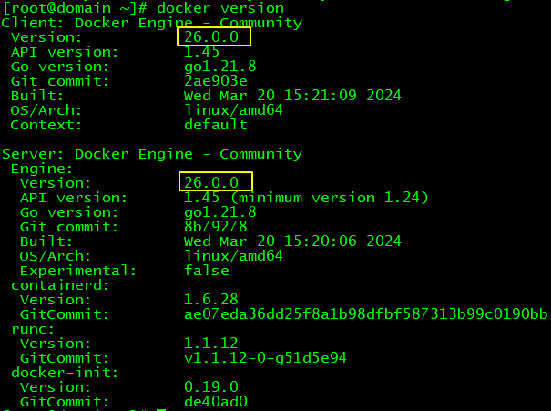
操作002：HelloWorld
上一篇：🔗 Operation001-Install · 下一篇：🔗 Operation003-WorkQueue
一、目标
生产者发送消息，消费者接收消息，用最简单的方式实现
官网说明参见下面超链接：
RabbitMQ tutorial - "Hello World!" — RabbitMQ
![(P) -> [|||] -> (C)](assets\python-one.png)
二、具体操作
1、创建Java工程
①消息发送端（生产者）
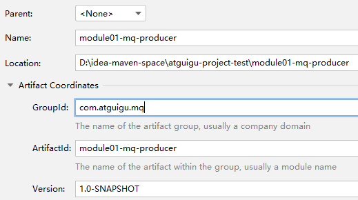
②消息接收端（消费者）
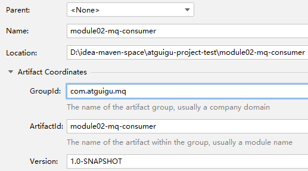
③添加依赖
<dependencies>
<dependency>
<groupId>com.rabbitmq</groupId>
<artifactId>amqp-client</artifactId>
<version>5.20.0</version>
</dependency>
</dependencies>
2、发送消息
①Java代码
不用客气，整个代码全部复制——当然，连接信息改成你自己的：
package com.atguigu.rabbitmq.simple;
import com.rabbitmq.client.Channel;
import com.rabbitmq.client.Connection;
import com.rabbitmq.client.ConnectionFactory;
public class Producer {
public static void main(String[] args) throws Exception {
// 创建连接工厂
ConnectionFactory connectionFactory = new ConnectionFactory();
// 设置主机地址
connectionFactory.setHost("192.168.200.100");
// 设置连接端口号：默认为 5672
connectionFactory.setPort(5672);
// 虚拟主机名称：默认为 /
connectionFactory.setVirtualHost("/");
// 设置连接用户名；默认为guest
connectionFactory.setUsername("guest");
// 设置连接密码；默认为guest
connectionFactory.setPassword("123456");
// 创建连接
Connection connection = connectionFactory.newConnection();
// 创建频道
Channel channel = connection.createChannel();
// 声明（创建）队列
// queue 参数1：队列名称
// durable 参数2：是否定义持久化队列，当 MQ 重启之后还在
// exclusive 参数3：是否独占本次连接。若独占，只能有一个消费者监听这个队列且 Connection 关闭时删除这个队列
// autoDelete 参数4：是否在不使用的时候自动删除队列，也就是在没有Consumer时自动删除
// arguments 参数5：队列其它参数
channel.queueDeclare("simple_queue", true, false, false, null);
// 要发送的信息
String message = "你好；小兔子！";
// 参数1：交换机名称,如果没有指定则使用默认Default Exchange
// 参数2：路由key,简单模式可以传递队列名称
// 参数3：配置信息
// 参数4：消息内容
channel.basicPublish("", "simple_queue", null, message.getBytes());
System.out.println("已发送消息：" + message);
// 关闭资源
channel.close();
connection.close();
}
}
②查看效果
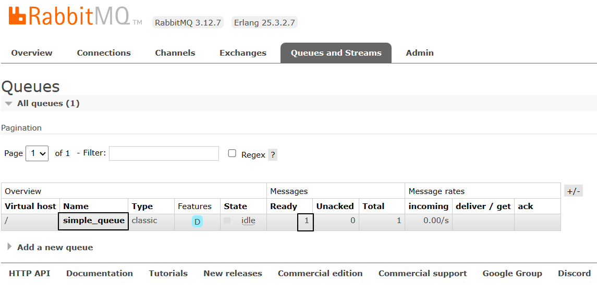
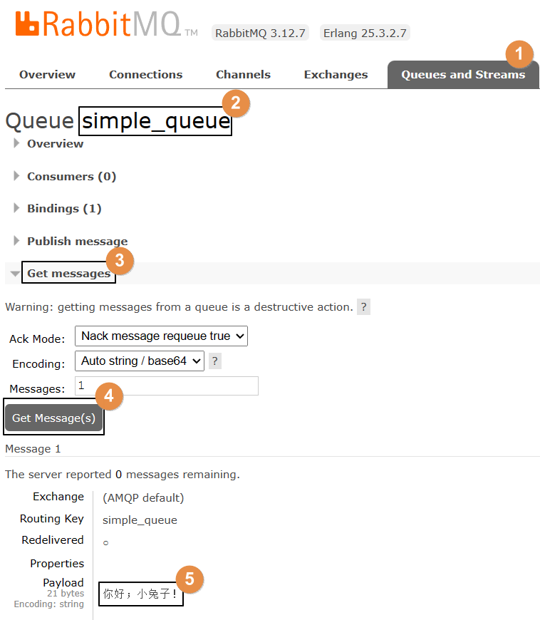
3、接收消息
①Java代码
不用客气，整个代码全部复制——当然，连接信息改成你自己的：
package com.atguigu.rabbitmq.simple;
import com.rabbitmq.client.*;
import java.io.IOException;
public class Consumer {
public static void main(String[] args) throws Exception {
// 1.创建连接工厂
ConnectionFactory factory = new ConnectionFactory();
// 2. 设置参数
factory.setHost("192.168.200.100");
factory.setPort(5672);
factory.setVirtualHost("/");
factory.setUsername("guest");
factory.setPassword("123456");
// 3. 创建连接 Connection
Connection connection = factory.newConnection();
// 4. 创建Channel
Channel channel = connection.createChannel();
// 5. 创建队列
// 如果没有一个名字叫simple_queue的队列，则会创建该队列，如果有则不会创建
// 参数1. queue：队列名称
// 参数2. durable：是否持久化。如果持久化，则当MQ重启之后还在
// 参数3. exclusive：是否独占。
// 参数4. autoDelete：是否自动删除。当没有Consumer时，自动删除掉
// 参数5. arguments：其它参数。
channel.queueDeclare("simple_queue",true,false,false,null);
// 接收消息
DefaultConsumer consumer = new DefaultConsumer(channel){
// 回调方法,当收到消息后，会自动执行该方法
// 参数1. consumerTag：标识
// 参数2. envelope：获取一些信息，交换机，路由key...
// 参数3. properties：配置信息
// 参数4. body：数据
@Override
public void handleDelivery(String consumerTag, Envelope envelope, AMQP.BasicProperties properties, byte[] body) throws IOException {
System.out.println("consumerTag："+consumerTag);
System.out.println("Exchange："+envelope.getExchange());
System.out.println("RoutingKey："+envelope.getRoutingKey());
System.out.println("properties："+properties);
System.out.println("body："+new String(body));
}
};
// 参数1. queue：队列名称
// 参数2. autoAck：是否自动确认，类似咱们发短信，发送成功会收到一个确认消息
// 参数3. callback：回调对象
// 消费者类似一个监听程序，主要是用来监听消息
channel.basicConsume("simple_queue",true,consumer);
}
}
②控制台打印
consumerTag：amq.ctag-8EB87GaZFP52LKSMcj98UA Exchange： RoutingKey：simple_queue properties：#contentHeader
(content-type=null, content-encoding=null, headers=null, delivery-mode=null, priority=null, correlation-id=null, reply-to=null, expiration=null, message-id=null, timestamp=null, type=null, user-id=null, app-id=null, cluster-id=null) body：你好；小兔子！
③查看后台管理界面
因为消息被消费掉了，所以RabbitMQ服务器上没有了：
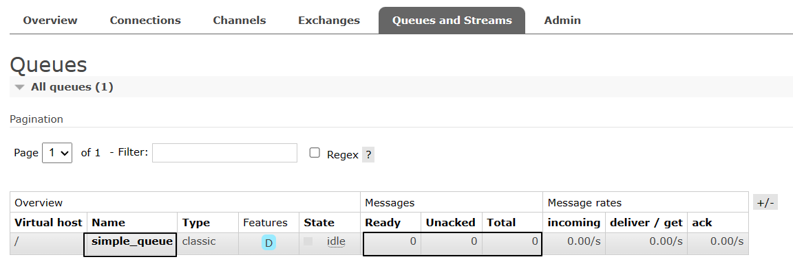
操作003：工作队列模式
上一篇：🔗 Operation002-HelloWorld · 下一篇：🔗 Operation004-PubSub
一、生产者代码
1、封装工具类
package com.atguigu.rabbitmq.util;
import com.rabbitmq.client.Connection;
import com.rabbitmq.client.ConnectionFactory;
public class ConnectionUtil {
public static final String HOST_ADDRESS = "192.168.200.100";
public static Connection getConnection() throws Exception {
// 定义连接工厂
ConnectionFactory factory = new ConnectionFactory();
// 设置服务地址
factory.setHost(HOST_ADDRESS);
// 端口
factory.setPort(5672);
//设置账号信息，用户名、密码、vhost
factory.setVirtualHost("/");
factory.setUsername("guest");
factory.setPassword("123456");
// 通过工程获取连接
Connection connection = factory.newConnection();
return connection;
}
public static void main(String[] args) throws Exception {
Connection con = ConnectionUtil.getConnection();
// amqp://guest@192.168.200.100:5672/
System.out.println(con);
con.close();
}
}
2、编写代码
package com.atguigu.rabbitmq.work;
import com.atguigu.rabbitmq.util.ConnectionUtil;
import com.rabbitmq.client.Channel;
import com.rabbitmq.client.Connection;
public class Producer {
public static final String QUEUE_NAME = "work_queue";
public static void main(String[] args) throws Exception {
Connection connection = ConnectionUtil.getConnection();
Channel channel = connection.createChannel();
channel.queueDeclare(QUEUE_NAME,true,false,false,null);
for (int i = 1; i <= 10; i++) {
String body = i+"hello rabbitmq~~~";
channel.basicPublish("",QUEUE_NAME,null,body.getBytes());
}
channel.close();
connection.close();
}
}
3、发送消息效果
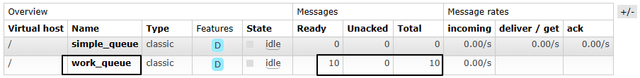
二、消费者代码
1、编写代码
创建Consumer1和Consumer2。Consumer2只是类名和打印提示不同，代码完全一样。
package com.atguigu.rabbitmq.work;
import com.atguigu.rabbitmq.util.ConnectionUtil;
import com.rabbitmq.client.*;
import java.io.IOException;
public class Consumer1 {
static final String QUEUE_NAME = "work_queue";
public static void main(String[] args) throws Exception {
Connection connection = ConnectionUtil.getConnection();
Channel channel = connection.createChannel();
channel.queueDeclare(QUEUE_NAME,true,false,false,null);
Consumer consumer = new DefaultConsumer(channel){
@Override
public void handleDelivery(String consumerTag, Envelope envelope, AMQP.BasicProperties properties, byte[] body) throws IOException {
System.out.println("Consumer1 body："+new String(body));
}
};
channel.basicConsume(QUEUE_NAME,true,consumer);
}
}
注意：运行的时候先启动两个消费端程序，然后再启动生产者端程序。
如果已经运行过生产者程序，则手动把work_queue队列删掉。
2、运行效果
最终两个消费端程序竞争结果如下：
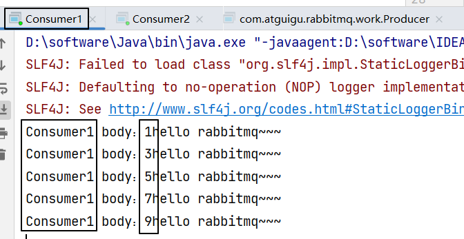
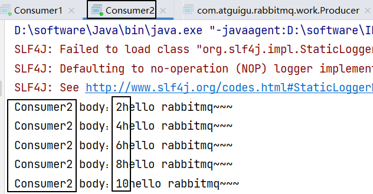
操作004：发布订阅模式
上一篇：🔗 Operation003-WorkQueue · 下一篇：🔗 Operation005-Routing
一、生产者代码
package com.atguigu.rabbitmq.fanout;
import com.atguigu.rabbitmq.util.ConnectionUtil;
import com.rabbitmq.client.BuiltinExchangeType;
import com.rabbitmq.client.Channel;
import com.rabbitmq.client.Connection;
import com.rabbitmq.client.ConnectionFactory;
public class Producer {
public static void main(String[] args) throws Exception {
// 1、获取连接
Connection connection = ConnectionUtil.getConnection();
// 2、创建频道
Channel channel = connection.createChannel();
// 参数1. exchange：交换机名称
// 参数2. type：交换机类型
// DIRECT("direct")：定向
// FANOUT("fanout")：扇形（广播），发送消息到每一个与之绑定队列。
// TOPIC("topic")：通配符的方式
// HEADERS("headers")：参数匹配
// 参数3. durable：是否持久化
// 参数4. autoDelete：自动删除
// 参数5. internal：内部使用。一般false
// 参数6. arguments：其它参数
String exchangeName = "test_fanout";
// 3、创建交换机
channel.exchangeDeclare(exchangeName, BuiltinExchangeType.FANOUT,true,false,false,null);
// 4、创建队列
String queue1Name = "test_fanout_queue1";
String queue2Name = "test_fanout_queue2";
channel.queueDeclare(queue1Name,true,false,false,null);
channel.queueDeclare(queue2Name,true,false,false,null);
// 5、绑定队列和交换机
// 参数1. queue：队列名称
// 参数2. exchange：交换机名称
// 参数3. routingKey：路由键，绑定规则
// 如果交换机的类型为fanout，routingKey设置为""
channel.queueBind(queue1Name,exchangeName,"");
channel.queueBind(queue2Name,exchangeName,"");
String body = "日志信息：张三调用了findAll方法...日志级别：info...";
// 6、发送消息
channel.basicPublish(exchangeName,"",null,body.getBytes());
// 7、释放资源
channel.close();
connection.close();
}
}
二、消费者代码
1、消费者1号
package com.atguigu.rabbitmq.fanout;
import com.atguigu.rabbitmq.util.ConnectionUtil;
import com.rabbitmq.client.*;
import java.io.IOException;
public class Consumer1 {
public static void main(String[] args) throws Exception {
Connection connection = ConnectionUtil.getConnection();
Channel channel = connection.createChannel();
String queue1Name = "test_fanout_queue1";
channel.queueDeclare(queue1Name,true,false,false,null);
Consumer consumer = new DefaultConsumer(channel){
@Override
public void handleDelivery(String consumerTag, Envelope envelope, AMQP.BasicProperties properties, byte[] body) throws IOException {
System.out.println("body："+new String(body));
System.out.println("队列 1 消费者 1 将日志信息打印到控制台.....");
}
};
channel.basicConsume(queue1Name,true,consumer);
}
}
2、消费者2号
package com.atguigu.rabbitmq.fanout;
import com.atguigu.rabbitmq.util.ConnectionUtil;
import com.rabbitmq.client.*;
import java.io.IOException;
public class Consumer2 {
public static void main(String[] args) throws Exception {
Connection connection = ConnectionUtil.getConnection();
Channel channel = connection.createChannel();
String queue2Name = "test_fanout_queue2";
channel.queueDeclare(queue2Name,true,false,false,null);
Consumer consumer = new DefaultConsumer(channel){
@Override
public void handleDelivery(String consumerTag, Envelope envelope, AMQP.BasicProperties properties, byte[] body) throws IOException {
System.out.println("body："+new String(body));
System.out.println("队列 2 消费者 2 将日志信息打印到控制台.....");
}
};
channel.basicConsume(queue2Name,true,consumer);
}
}
三、运行效果
还是先启动消费者，然后再运行生产者程序发送消息：
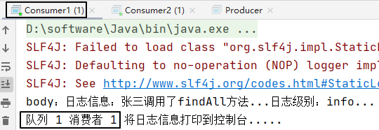
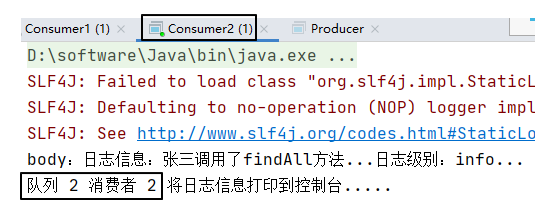
四、小结
交换机和队列的绑定关系如下图所示：
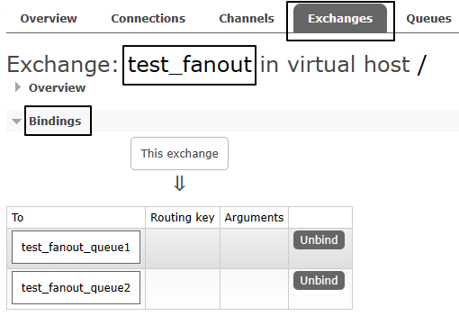
交换机需要与队列进行绑定，绑定之后；一个消息可以被多个消费者都收到。
发布订阅模式与工作队列模式的区别：
- 工作队列模式本质上是绑定默认交换机
- 发布订阅模式绑定指定交换机
- 监听同一个队列的消费端程序彼此之间是竞争关系
- 绑定同一个交换机的多个队列在发布订阅模式下，消息是广播的，每个队列都能接收到消息
操作006-路由模式
上一篇：🔗 Operation004-PubSub · 下一篇：🔗 Operation006-Topics
一、生产者代码
package com.atguigu.rabbitmq.routing;
import com.atguigu.rabbitmq.util.ConnectionUtil;
import com.rabbitmq.client.BuiltinExchangeType;
import com.rabbitmq.client.Channel;
import com.rabbitmq.client.Connection;
import com.rabbitmq.client.ConnectionFactory;
public class Producer {
public static void main(String[] args) throws Exception {
Connection connection = ConnectionUtil.getConnection();
Channel channel = connection.createChannel();
String exchangeName = "test_direct";
// 创建交换机
channel.exchangeDeclare(exchangeName,BuiltinExchangeType.DIRECT,true,false,false,null);
// 创建队列
String queue1Name = "test_direct_queue1";
String queue2Name = "test_direct_queue2";
// 声明（创建）队列
channel.queueDeclare(queue1Name,true,false,false,null);
channel.queueDeclare(queue2Name,true,false,false,null);
// 队列绑定交换机
// 队列1绑定error
channel.queueBind(queue1Name,exchangeName,"error");
// 队列2绑定info error warning
channel.queueBind(queue2Name,exchangeName,"info");
channel.queueBind(queue2Name,exchangeName,"error");
channel.queueBind(queue2Name,exchangeName,"warning");
String message = "日志信息：张三调用了delete方法.错误了,日志级别warning";
// 发送消息
channel.basicPublish(exchangeName,"warning",null,message.getBytes());
System.out.println(message);
// 释放资源
channel.close();
connection.close();
}
}
二、消费者代码
1、消费者1号
package com.atguigu.rabbitmq.routing;
import com.atguigu.rabbitmq.util.ConnectionUtil;
import com.rabbitmq.client.*;
import java.io.IOException;
public class Consumer1 {
public static void main(String[] args) throws Exception {
Connection connection = ConnectionUtil.getConnection();
Channel channel = connection.createChannel();
String queue1Name = "test_direct_queue1";
channel.queueDeclare(queue1Name,true,false,false,null);
Consumer consumer = new DefaultConsumer(channel){
@Override
public void handleDelivery(String consumerTag, Envelope envelope, AMQP.BasicProperties properties, byte[] body) throws IOException {
System.out.println("body："+new String(body));
System.out.println("Consumer1 将日志信息打印到控制台.....");
}
};
channel.basicConsume(queue1Name,true,consumer);
}
}
2、消费者2号
package com.atguigu.rabbitmq.routing;
import com.atguigu.rabbitmq.util.ConnectionUtil;
import com.rabbitmq.client.*;
import java.io.IOException;
public class Consumer2 {
public static void main(String[] args) throws Exception {
Connection connection = ConnectionUtil.getConnection();
Channel channel = connection.createChannel();
String queue2Name = "test_direct_queue2";
channel.queueDeclare(queue2Name,true,false,false,null);
Consumer consumer = new DefaultConsumer(channel){
@Override
public void handleDelivery(String consumerTag, Envelope envelope, AMQP.BasicProperties properties, byte[] body) throws IOException {
System.out.println("body："+new String(body));
System.out.println("Consumer2 将日志信息存储到数据库.....");
}
};
channel.basicConsume(queue2Name,true,consumer);
}
}
三、运行结果
1、绑定关系
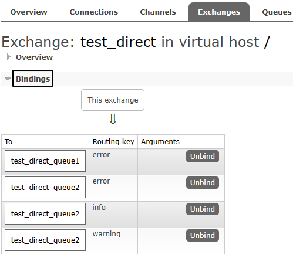
2、消费消息
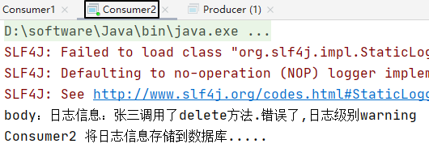
操作006：主题模式
上一篇：🔗 Operation005-Routing · 下一篇：🔗 Operation007-SpringBoot
一、生产者代码
package com.atguigu.rabbitmq.topic;
import com.atguigu.rabbitmq.util.ConnectionUtil;
import com.rabbitmq.client.BuiltinExchangeType;
import com.rabbitmq.client.Channel;
import com.rabbitmq.client.Connection;
import com.rabbitmq.client.ConnectionFactory;
public class Producer {
public static void main(String[] args) throws Exception {
Connection connection = ConnectionUtil.getConnection();
Channel channel = connection.createChannel();
String exchangeName = "test_topic";
channel.exchangeDeclare(exchangeName, BuiltinExchangeType.TOPIC,true,false,false,null);
String queue1Name = "test_topic_queue1";
String queue2Name = "test_topic_queue2";
channel.queueDeclare(queue1Name,true,false,false,null);
channel.queueDeclare(queue2Name,true,false,false,null);
// 绑定队列和交换机
// 参数1. queue：队列名称
// 参数2. exchange：交换机名称
// 参数3. routingKey：路由键,绑定规则
// 如果交换机的类型为fanout ,routingKey设置为""
// routing key 常用格式：系统的名称.日志的级别。
// 需求： 所有error级别的日志存入数据库,所有order系统的日志存入数据库
channel.queueBind(queue1Name,exchangeName,"#.error");
channel.queueBind(queue1Name,exchangeName,"order.*");
channel.queueBind(queue2Name,exchangeName,"*.*");
// 分别发送消息到队列：order.info、goods.info、goods.error
String body = "[所在系统：order][日志级别：info][日志内容：订单生成，保存成功]";
channel.basicPublish(exchangeName,"order.info",null,body.getBytes());
body = "[所在系统：goods][日志级别：info][日志内容：商品发布成功]";
channel.basicPublish(exchangeName,"goods.info",null,body.getBytes());
body = "[所在系统：goods][日志级别：error][日志内容：商品发布失败]";
channel.basicPublish(exchangeName,"goods.error",null,body.getBytes());
channel.close();
connection.close();
}
}
二、消费者代码
1、消费者1号
消费者1监听队列1：
package com.atguigu.rabbitmq.topic;
import com.atguigu.rabbitmq.util.ConnectionUtil;
import com.rabbitmq.client.*;
import java.io.IOException;
public class Consumer1 {
public static void main(String[] args) throws Exception {
Connection connection = ConnectionUtil.getConnection();
Channel channel = connection.createChannel();
String QUEUE_NAME = "test_topic_queue1";
channel.queueDeclare(QUEUE_NAME,true,false,false,null);
Consumer consumer = new DefaultConsumer(channel){
@Override
public void handleDelivery(String consumerTag, Envelope envelope, AMQP.BasicProperties properties, byte[] body) throws IOException {
System.out.println("body："+new String(body));
}
};
channel.basicConsume(QUEUE_NAME,true,consumer);
}
}
2、消费者2号
消费者2监听队列2：
package com.atguigu.rabbitmq.topic;
import com.atguigu.rabbitmq.util.ConnectionUtil;
import com.rabbitmq.client.*;
import java.io.IOException;
public class Consumer2 {
public static void main(String[] args) throws Exception {
Connection connection = ConnectionUtil.getConnection();
Channel channel = connection.createChannel();
String QUEUE_NAME = "test_topic_queue2";
channel.queueDeclare(QUEUE_NAME,true,false,false,null);
Consumer consumer = new DefaultConsumer(channel){
@Override
public void handleDelivery(String consumerTag, Envelope envelope, AMQP.BasicProperties properties, byte[] body) throws IOException {
System.out.println("body："+new String(body));
}
};
channel.basicConsume(QUEUE_NAME,true,consumer);
}
}
三、运行效果
队列1：
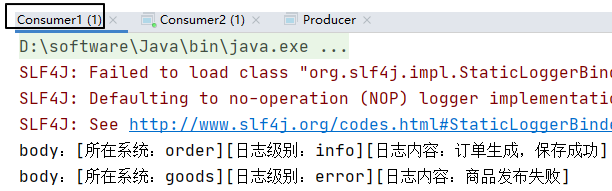
队列2：
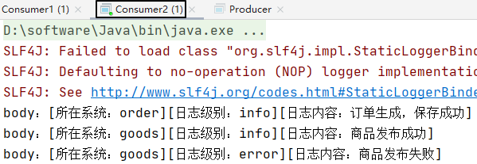
操作007：整合SpringBoot
上一篇：🔗 Operation006-Topics · 下一篇：🔗 Operation008-Confirm01-A-Producer
1、消费者工程
①创建module
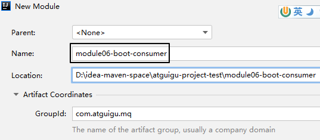
②配置POM
<parent>
<groupId>org.springframework.boot</groupId>
<artifactId>spring-boot-starter-parent</artifactId>
<version>3.1.5</version>
</parent>
<dependencies>
<dependency>
<groupId>org.springframework.boot</groupId>
<artifactId>spring-boot-starter-amqp</artifactId>
</dependency>
<dependency>
<groupId>org.springframework.boot</groupId>
<artifactId>spring-boot-starter-web</artifactId>
</dependency>
<dependency>
<groupId>org.projectlombok</groupId>
<artifactId>lombok</artifactId>
</dependency>
</dependencies>
③YAML
增加日志打印的配置：
spring:
rabbitmq:
host: 192.168.200.100
port: 5672
username: guest
password: 123456
virtual-host: /
logging:
level:
com.atguigu.mq.listener.MyMessageListener: info
④主启动类
仿照生产者工程的主启动类，改一下类名即可
package com.atguigu.mq;
import org.springframework.boot.SpringApplication;
import org.springframework.boot.autoconfigure.SpringBootApplication;
@SpringBootApplication
public class RabbitMQConsumerMainType {
public static void main(String[] args) {
SpringApplication.run(RabbitMQConsumerMainType.class, args);
}
}
⑤监听器
package com.atguigu.mq.listener;
import lombok.extern.slf4j.Slf4j;
import com.rabbitmq.client.Channel;
import org.springframework.amqp.core.Message;
import org.springframework.amqp.rabbit.annotation.Exchange;
import org.springframework.amqp.rabbit.annotation.Queue;
import org.springframework.amqp.rabbit.annotation.QueueBinding;
import org.springframework.amqp.rabbit.annotation.RabbitListener;
import org.springframework.stereotype.Component;
@Component
@Slf4j
public class MyMessageListener {
public static final String EXCHANGE_DIRECT = "exchange.direct.order";
public static final String ROUTING_KEY = "order";
public static final String QUEUE_NAME = "queue.order";
@RabbitListener(bindings = @QueueBinding(
value = @Queue(value = QUEUE_NAME, durable = "true"),
exchange = @Exchange(value = EXCHANGE_DIRECT),
key = {ROUTING_KEY}
))
public void processMessage(String dateString,
Message message,
Channel channel) {
log.info(dateString);
}
}
2、@RabbitListener注解属性对比
①bindings属性
- 表面作用：
- 指定交换机和队列之间的绑定关系
- 指定当前方法要监听的队列
- 隐藏效果：如果RabbitMQ服务器上没有这里指定的交换机和队列，那么框架底层的代码会创建它们
②queues属性
@RabbitListener(queues = {QUEUE_ATGUIGU})
- 作用：指定当前方法要监听的队列
- 注意：此时框架不会创建相关交换机和队列，必须提前创建好
3、生产者工程
①创建module
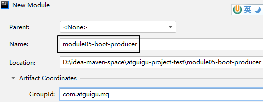
②配置POM
<parent>
<groupId>org.springframework.boot</groupId>
<artifactId>spring-boot-starter-parent</artifactId>
<version>3.1.5</version>
</parent>
<dependencies>
<dependency>
<groupId>org.springframework.boot</groupId>
<artifactId>spring-boot-starter-amqp</artifactId>
</dependency>
<dependency>
<groupId>org.springframework.boot</groupId>
<artifactId>spring-boot-starter-test</artifactId>
</dependency>
</dependencies>
③YAML
spring:
rabbitmq:
host: 192.168.200.100
port: 5672
username: guest
password: 123456
virtual-host: /
④主启动类
package com.atguigu.mq;
import org.springframework.boot.SpringApplication;
import org.springframework.boot.autoconfigure.SpringBootApplication;
@SpringBootApplication
public class RabbitMQProducerMainType {
public static void main(String[] args) {
SpringApplication.run(RabbitMQProducerMainType.class, args);
}
}
⑤测试程序
package com.atguigu.mq.test;
import org.junit.jupiter.api.Test;
import org.springframework.amqp.rabbit.core.RabbitTemplate;
import org.springframework.beans.factory.annotation.Autowired;
import org.springframework.boot.test.context.SpringBootTest;
@SpringBootTest
public class RabbitMQTest {
public static final String EXCHANGE_DIRECT = "exchange.direct.order";
public static final String ROUTING_KEY = "order";
@Autowired
private RabbitTemplate rabbitTemplate;
@Test
public void testSendMessage() {
rabbitTemplate.convertAndSend(
EXCHANGE_DIRECT,
ROUTING_KEY,
"Hello atguigu");
}
}
操作008-01-A：生产者端消息确认机制
上一篇：🔗 Operation007-SpringBoot · 下一篇：🔗 Operation008-Confirm01-B-BackupEx
一、创建module
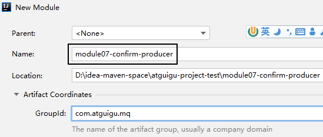
二、搭建环境
1、配置POM
<parent>
<groupId>org.springframework.boot</groupId>
<artifactId>spring-boot-starter-parent</artifactId>
<version>3.1.5</version>
</parent>
<dependencies>
<dependency>
<groupId>org.springframework.boot</groupId>
<artifactId>spring-boot-starter-amqp</artifactId>
</dependency>
<dependency>
<groupId>org.springframework.boot</groupId>
<artifactId>spring-boot-starter-test</artifactId>
</dependency>
<dependency>
<groupId>org.projectlombok</groupId>
<artifactId>lombok</artifactId>
</dependency>
</dependencies>
2、主启动类
没有特殊设定：
package com.atguigu.mq;
import org.springframework.boot.SpringApplication;
import org.springframework.boot.autoconfigure.SpringBootApplication;
@SpringBootApplication
public class RabbitMQProducerMainType {
public static void main(String[] args) {
SpringApplication.run(RabbitMQProducerMainType.class, args);
}
}
3、YAML
注意：publisher-confirm-type和publisher-returns是两个必须要增加的配置，如果没有则本节功能不生效
spring:
rabbitmq:
host: 192.168.200.100
port: 5672
username: guest
password: 123456
virtual-host: /
publisher-confirm-type: CORRELATED # 交换机的确认
publisher-returns: true # 队列的确认
logging:
level:
com.atguigu.mq.config.MQProducerAckConfig: info
三、创建配置类
1、目标
在这里我们为什么要创建这个配置类呢？首先，我们需要声明回调函数来接收RabbitMQ服务器返回的确认信息：
| 方法名 | 方法功能 | 所属接口 | 接口所属类 |
|---|---|---|---|
| confirm() | 确认消息是否发送到交换机 | ConfirmCallback | RabbitTemplate |
| returnedMessage() | 确认消息是否发送到队列 | ReturnsCallback | RabbitTemplate |
然后，就是对RabbitTemplate的功能进行增强，因为回调函数所在对象必须设置到RabbitTemplate对象中才能生效。
原本RabbitTemplate对象并没有生产者端消息确认的功能，要给它设置对应的组件才可以。
而设置对应的组件，需要调用RabbitTemplate对象下面两个方法：
| 设置组件调用的方法 | 所需对象类型 |
|---|---|
| setConfirmCallback() | ConfirmCallback接口类型 |
| setReturnCallback() | ReturnCallback接口类型 |
2、API说明
①ConfirmCallback接口
这是RabbitTemplate内部的一个接口，源代码如下：
/**
* A callback for publisher confirmations.
*
*/
@FunctionalInterface
public interface ConfirmCallback {
/**
* Confirmation callback.
* @param correlationData correlation data for the callback.
* @param ack true for ack, false for nack
* @param cause An optional cause, for nack, when available, otherwise null.
*/
void confirm(@Nullable CorrelationData correlationData, boolean ack, @Nullable String cause);
}
生产者端发送消息之后，回调confirm()方法
- ack参数值为true：表示消息成功发送到了交换机
- ack参数值为false：表示消息没有发送到交换机
②ReturnCallback接口
同样也RabbitTemplate内部的一个接口，源代码如下：
/**
* A callback for returned messages.
*
* @since 2.3
*/
@FunctionalInterface
public interface ReturnsCallback {
/**
* Returned message callback.
* @param returned the returned message and metadata.
*/
void returnedMessage(ReturnedMessage returned);
}
注意：接口中的returnedMessage()方法仅在消息没有发送到队列时调用
ReturnedMessage类中主要属性含义如下：
| 属性名 | 类型 | 含义 |
|---|---|---|
| message | org.springframework.amqp.core.Message | 消息以及消息相关数据 |
| replyCode | int | 应答码，类似于HTTP响应状态码 |
| replyText | String | 应答码说明 |
| exchange | String | 交换机名称 |
| routingKey | String | 路由键名称 |
3、配置类代码
①要点1
加@Component注解，加入IOC容器
②要点2
配置类自身实现ConfirmCallback、ReturnCallback这两个接口，然后通过this指针把配置类的对象设置到RabbitTemplate对象中。
操作封装到了一个专门的void init()方法中。
为了保证这个void init()方法在应用启动时被调用，我们使用@PostConstruct注解来修饰这个方法。
关于@PostConstruct注解大家可以参照以下说明：
@PostConstruct注解是Java中的一个标准注解，它用于指定在对象创建之后立即执行的方法。当使用依赖注入（如Spring框架）或者其他方式创建对象时，@PostConstruct注解可以确保在对象完全初始化之后，执行相应的方法。
使用@PostConstruct注解的方法必须满足以下条件：
- 方法不能有任何参数。
- 方法必须是非静态的。
- 方法不能返回任何值。
当容器实例化一个带有@PostConstruct注解的Bean时，它会在调用构造函数之后，并在依赖注入完成之前调用被@PostConstruct注解标记的方法。这样，我们可以在该方法中进行一些初始化操作，比如读取配置文件、建立数据库连接等。
③代码
有了以上说明，下面我们就可以展示配置类的整体代码：
package com.atguigu.mq.config;
import jakarta.annotation.PostConstruct;
import lombok.extern.slf4j.Slf4j;
import org.springframework.amqp.core.ReturnedMessage;
import org.springframework.amqp.rabbit.connection.CorrelationData;
import org.springframework.amqp.rabbit.core.RabbitTemplate;
import org.springframework.beans.factory.annotation.Autowired;
import org.springframework.stereotype.Component;
@Component
@Slf4j
public class MQProducerAckConfig implements RabbitTemplate.ConfirmCallback, RabbitTemplate.ReturnsCallback{
@Autowired
private RabbitTemplate rabbitTemplate;
@PostConstruct
public void init() {
rabbitTemplate.setConfirmCallback(this);
rabbitTemplate.setReturnsCallback(this);
}
@Override
public void confirm(CorrelationData correlationData, boolean ack, String cause) {
if (ack) {
log.info("消息发送到交换机成功！数据：" + correlationData);
} else {
log.info("消息发送到交换机失败！数据：" + correlationData + " 原因：" + cause);
}
}
@Override
public void returnedMessage(ReturnedMessage returned) {
log.info("消息主体: " + new String(returned.getMessage().getBody()));
log.info("应答码: " + returned.getReplyCode());
log.info("描述：" + returned.getReplyText());
log.info("消息使用的交换器 exchange : " + returned.getExchange());
log.info("消息使用的路由键 routing : " + returned.getRoutingKey());
}
}
四、发送消息
package com.atguigu.mq.test;
import org.junit.jupiter.api.Test;
import org.springframework.amqp.rabbit.core.RabbitTemplate;
import org.springframework.beans.factory.annotation.Autowired;
import org.springframework.boot.test.context.SpringBootTest;
@SpringBootTest
public class RabbitMQTest {
public static final String EXCHANGE_DIRECT = "exchange.direct.order";
public static final String ROUTING_KEY = "order";
@Autowired
private RabbitTemplate rabbitTemplate;
@Test
public void testSendMessage() {
rabbitTemplate.convertAndSend(
EXCHANGE_DIRECT,
ROUTING_KEY,
"Hello atguigu");
}
}
通过调整代码，测试如下三种情况：
- 交换机正确、路由键正确
- 交换机正确、路由键不正确，无法发送到队列
- 交换机不正确，无法发送到交换机
操作008-01-B：备份交换机
上一篇：🔗 Operation008-Confirm01-A-Producer · 下一篇：🔗 Operation008-Confirm02-Duration
一、创建备份交换机
1、创建备份交换机
注意：备份交换机一定要选择fanout类型，因为原交换机转入备份交换机时并不会指定路由键
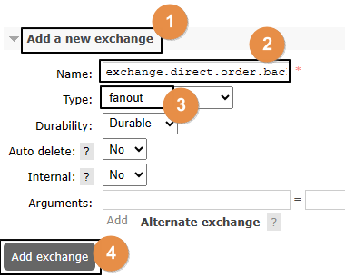
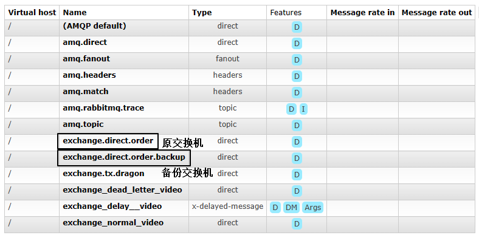
2、创建备份交换机要绑定的队列
①创建队列
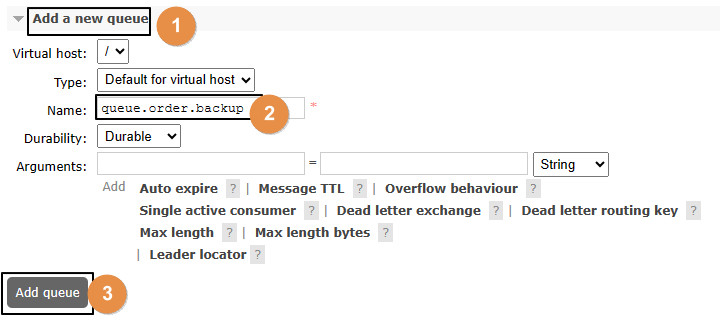
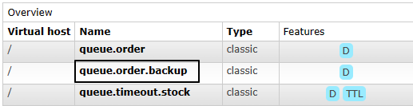
②绑定交换机
注意：这里是要和备份交换机绑定
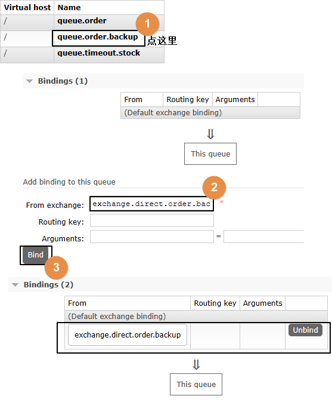
3、针对备份队列创建消费端监听器
public static final String EXCHANGE_DIRECT_BACKUP = "exchange.direct.order.backup";
public static final String QUEUE_NAME_BACKUP = "queue.order.backup";
@RabbitListener(bindings = @QueueBinding(
value = @Queue(value = QUEUE_NAME_BACKUP, durable = "true"),
exchange = @Exchange(value = EXCHANGE_DIRECT_BACKUP),
key = {""}
))
public void processMessageBackup(String dateString,
Message message,
Channel channel) {
log.info("BackUp: " + dateString);
}
二、设定备份关系
1、原交换机删除
·
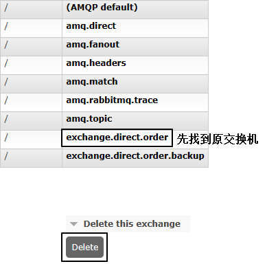
2、重新创建原交换机
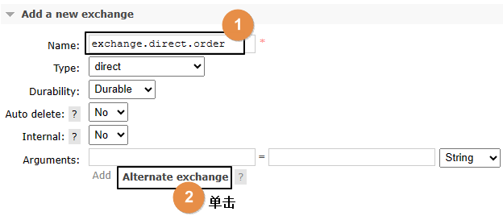
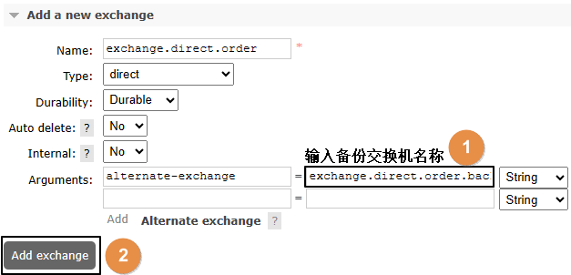
3、原交换机重新绑定原队列
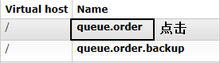
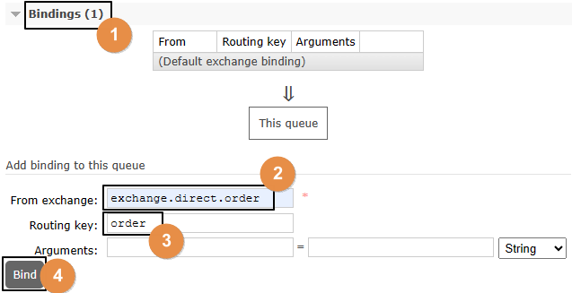
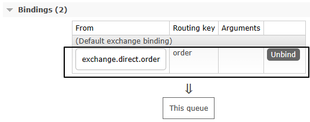
三、测试
- 启动消费者端
- 发送消息，但是路由键不对，于是转入备份交换机
操作008-02：交换机和队列持久化
上一篇：🔗 Operation008-Confirm01-B-BackupEx · 下一篇：🔗 Operation008-Confirm03-Consumer
一、测试非持久化交换机和队列
1、创建非持久化交换机
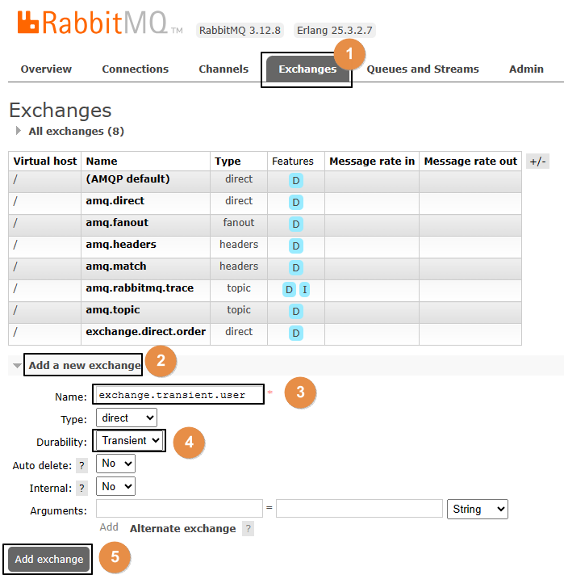
创建之后，可以在列表中看到：
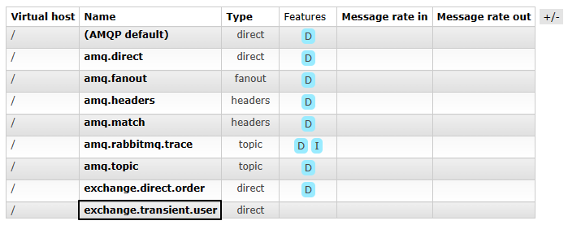
2、创建非持久化队列
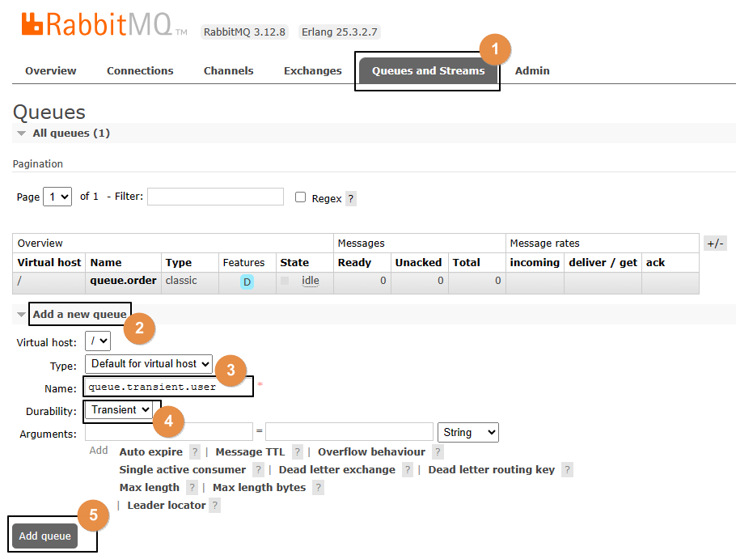
创建之后，可以在列表中看到：
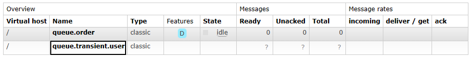
3、绑定
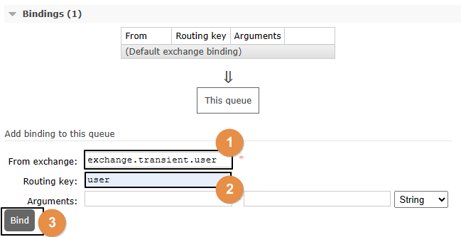
4、发送消息
public static final String EXCHANGE_TRANSIENT = "exchange.transient.user";
public static final String ROUTING_KEY_TRANSIENT = "user";
@Test
public void testSendMessageTransient() {
rabbitTemplate.convertAndSend(
EXCHANGE_TRANSIENT,
ROUTING_KEY_TRANSIENT,
"Hello atguigu user~~~");
}
5、查看已发送消息
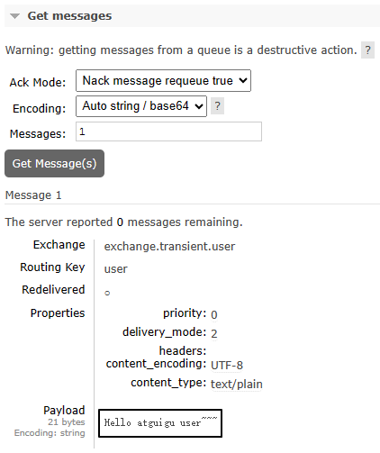
结论：临时性的交换机和队列也能够接收消息，但如果RabbitMQ服务器重启之后会怎么样呢？
6、重启RabbitMQ服务器
docker restart rabbitmq
重启之后，刚才临时性的交换机和队列都没了。在交换机和队列这二者中，队列是消息存储的容器，队列没了，消息就也跟着没了。
二、持久化的交换机和队列
我们其实不必专门创建持久化的交换机和队列，因为它们默认就是持久化的。接下来我们只需要确认一下：存放到队列中，尚未被消费端取走的消息，是否会随着RabbitMQ服务器重启而丢失？
1、发送消息
运行以前的发送消息方法即可，不过要关掉消费端程序
2、在管理界面查看消息
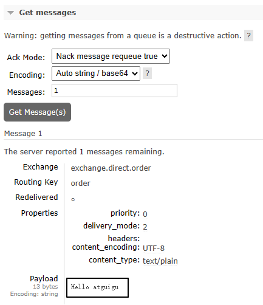
3、重启RabbitMQ服务器
docker restart rabbitmq
4、再次查看消息
仍然还在：
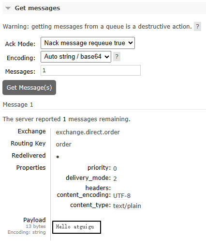
三、结论
在后台管理界面创建交换机和队列时，默认就是持久化的模式。
此时消息也是持久化的，不需要额外设置。
操作008-03：消费端消息确认
上一篇：🔗 Operation008-Confirm02-Duration · 下一篇：🔗 Operation009-Prefetch
一、ACK
ACK是acknowledge的缩写，表示已确认
二、默认情况
默认情况下，消费端取回消息后，默认会自动返回ACK确认消息，所以在前面的测试中消息被消费端消费之后，RabbitMQ得到ACK确认信息就会删除消息
但实际开发中，消费端根据消息队列投递的消息执行对应的业务，未必都能执行成功，如果希望能够多次重试，那么默认设定就不满足要求了
所以还是要修改成手动确认
三、创建消费端module
1、配置POM
<parent>
<groupId>org.springframework.boot</groupId>
<artifactId>spring-boot-starter-parent</artifactId>
<version>3.1.5</version>
</parent>
<dependencies>
<dependency>
<groupId>org.springframework.boot</groupId>
<artifactId>spring-boot-starter-amqp</artifactId>
</dependency>
<dependency>
<groupId>org.springframework.boot</groupId>
<artifactId>spring-boot-starter-web</artifactId>
</dependency>
<dependency>
<groupId>org.projectlombok</groupId>
<artifactId>lombok</artifactId>
</dependency>
</dependencies>
2、YAML
增加针对监听器的设置：
spring:
rabbitmq:
host: 192.168.200.100
port: 5672
username: guest
password: 123456
virtual-host: /
listener:
simple:
acknowledge-mode: manual # 把消息确认模式改为手动确认
3、主启动类
没有特殊设定：
package com.atguigu.mq;
import org.springframework.boot.SpringApplication;
import org.springframework.boot.autoconfigure.SpringBootApplication;
@SpringBootApplication
public class RabbitMQConsumerMainType {
public static void main(String[] args) {
SpringApplication.run(RabbitMQConsumerMainType.class, args);
}
}
四、消费端监听器
1、创建监听器类
package com.atguigu.mq.listener;
import com.rabbitmq.client.Channel;
import org.springframework.amqp.core.Message;
import org.springframework.stereotype.Component;
@Component
public class MyMessageListener {
public static final String EXCHANGE_DIRECT = "exchange.direct.order";
public static final String ROUTING_KEY = "order";
public static final String QUEUE_NAME = "queue.order";
public void processMessage(String dataString, Message message, Channel channel) {
}
}
2、在接收消息的方法上应用注解
// 修饰监听方法
@RabbitListener(
// 设置绑定关系
bindings = @QueueBinding(
// 配置队列信息：durable 设置为 true 表示队列持久化；autoDelete 设置为 false 表示关闭自动删除
value = @Queue(value = QUEUE_NAME, durable = "true", autoDelete = "false"),
// 配置交换机信息：durable 设置为 true 表示队列持久化；autoDelete 设置为 false 表示关闭自动删除
exchange = @Exchange(value = EXCHANGE_DIRECT, durable = "true", autoDelete = "false"),
// 配置路由键信息
key = {ROUTING_KEY}
))
public void processMessage(String dataString, Message message, Channel channel) {
}
3、接收消息方法内部逻辑
- 业务处理成功：手动返回ACK信息，表示消息成功消费
- 业务处理失败：手动返回NACK信息，表示消息消费失败。此时有两种后续操作供选择：
- 把消息重新放回消息队列，RabbitMQ会重新投递这条消息，那么消费端将重新消费这条消息——从而让业务代码再执行一遍
- 不把消息放回消息队列，返回reject信息表示拒绝，那么这条消息的处理就到此为止
4、相关API
先回到PPT理解“deliveryTag：交付标签机制”
下面我们探讨的三个方法都是来自于com.rabbitmq.client.Channel接口
①basicAck()方法
- 方法功能：给Broker返回ACK确认信息，表示消息已经在消费端成功消费，这样Broker就可以把消息删除了
- 参数列表：
| 参数名称 | 含义 |
|---|---|
| long deliveryTag | Broker给每一条进入队列的消息都设定一个唯一标识 |
| boolean multiple | 取值为true：为小于、等于deliveryTag的消息批量返回ACK信息 取值为false：仅为指定的deliveryTag返回ACK信息 |
②basicNack()方法
- 方法功能：给Broker返回NACK信息，表示消息在消费端消费失败，此时Broker的后续操作取决于参数requeue的值
- 参数列表：
| 参数名称 | 含义 |
|---|---|
| long deliveryTag | Broker给每一条进入队列的消息都设定一个唯一标识 |
| boolean multiple | 取值为true：为小于、等于deliveryTag的消息批量返回ACK信息 取值为false：仅为指定的deliveryTag返回ACK信息 |
| boolean requeue | 取值为true：Broker将消息重新放回队列，接下来会重新投递给消费端 取值为false：Broker将消息标记为已消费，不会放回队列 |
③basicReject()方法
- 方法功能：根据指定的deliveryTag，对该消息表示拒绝
- 参数列表：
| 参数名称 | 含义 |
|---|---|
| long deliveryTag | Broker给每一条进入队列的消息都设定一个唯一标识 |
| boolean requeue | 取值为true：Broker将消息重新放回队列，接下来会重新投递给消费端 取值为false：Broker将消息标记为已消费，不会放回队列 |
- basicNack()和basicReject()有啥区别？
- basicNack()有批量操作
- basicReject()没有批量操作
5、完整代码示例
package com.atguigu.mq.listener;
import com.rabbitmq.client.Channel;
import lombok.extern.slf4j.Slf4j;
import org.springframework.amqp.core.Message;
import org.springframework.amqp.rabbit.annotation.Exchange;
import org.springframework.amqp.rabbit.annotation.Queue;
import org.springframework.amqp.rabbit.annotation.QueueBinding;
import org.springframework.amqp.rabbit.annotation.RabbitListener;
import org.springframework.stereotype.Component;
import java.io.IOException;
@Component
@Slf4j
public class MyMessageListener {
public static final String EXCHANGE_DIRECT = "exchange.direct.order";
public static final String ROUTING_KEY = "order";
public static final String QUEUE_NAME = "queue.order";
// 修饰监听方法
@RabbitListener(
// 设置绑定关系
bindings = @QueueBinding(
// 配置队列信息：durable 设置为 true 表示队列持久化；autoDelete 设置为 false 表示关闭自动删除
value = @Queue(value = QUEUE_NAME, durable = "true", autoDelete = "false"),
// 配置交换机信息：durable 设置为 true 表示队列持久化；autoDelete 设置为 false 表示关闭自动删除
exchange = @Exchange(value = EXCHANGE_DIRECT, durable = "true", autoDelete = "false"),
// 配置路由键信息
key = {ROUTING_KEY}
))
public void processMessage(String dataString, Message message, Channel channel) throws IOException {
// 1、获取当前消息的 deliveryTag 值备用
long deliveryTag = message.getMessageProperties().getDeliveryTag();
try {
// 2、正常业务操作
log.info("消费端接收到消息内容：" + dataString);
// System.out.println(10 / 0);
// 3、给 RabbitMQ 服务器返回 ACK 确认信息
channel.basicAck(deliveryTag, false);
} catch (Exception e) {
// 4、获取信息，看当前消息是否曾经被投递过
Boolean redelivered = message.getMessageProperties().getRedelivered();
if (!redelivered) {
// 5、如果没有被投递过，那就重新放回队列，重新投递，再试一次
channel.basicNack(deliveryTag, false, true);
} else {
// 6、如果已经被投递过，且这一次仍然进入了 catch 块，那么返回拒绝且不再放回队列
channel.basicReject(deliveryTag, false);
}
}
}
}
五、要点总结
- 要点1：把消息确认模式改为手动确认
- 要点2：调用Channel对象的方法返回信息
- ACK：Acknowledgement，表示消息处理成功
- NACK：Negative Acknowledgement，表示消息处理失败
- Reject：拒绝，同样表示消息处理失败
- 要点3：后续操作
- requeue为true：重新放回队列，重新投递，再次尝试
- requeue为false：不放回队列，不重新投递
- 要点4：deliveryTag 消息的唯一标识，查找具体某一条消息的依据
六、流程梳理

七、多啰嗦一句
消费端如果设定消息重新放回队列，Broker重新投递消息，那么消费端就可以再次消费消息，这是一种“重试”机制，这需要消费端代码支持“幂等性”——这属于前置知识，不展开了。
操作009：Prefetch
上一篇：🔗 Operation008-Confirm03-Consumer · 下一篇：🔗 Operation010-MessageTimeout
一、思路
- 生产者发送100个消息
- 对照两种情况：
- 消费端没有设置prefetch参数：100个消息被全部取回
- 消费端设置prefetch参数为1：100个消息慢慢取回
二、生产者端代码
@Test
public void testSendMessage() {
for (int i = 0; i < 100; i++) {
rabbitTemplate.convertAndSend(
EXCHANGE_DIRECT,
ROUTING_KEY,
"Hello atguigu" + i);
}
}
三、消费者端代码
// 2、正常业务操作
log.info("消费端接收到消息内容：" + dataString);
// System.out.println(10 / 0);
TimeUnit.SECONDS.sleep(1);
// 3、给 RabbitMQ 服务器返回 ACK 确认信息
channel.basicAck(deliveryTag, false);
四、测试
1、未使用prefetch
- 不要启动消费端程序，如果正在运行就把它停了
- 运行生产者端程序发送100条消息
- 查看队列中消息的情况：
- 说明：
- Ready表示已经发送到队列的消息数量
- Unacked表示已经发送到消费端但是消费端尚未返回ACK信息的消息数量
-
Total未被删除的消息总数
-
接下来启动消费端程序，再查看队列情况：
- 能看到消息全部被消费端取走了，正在逐个处理、确认，说明有多少消息消费端就并发处理多少
2、设定prefetch
①YAML配置
spring:
rabbitmq:
host: 192.168.200.100
port: 5672
username: guest
password: 123456
virtual-host: /
listener:
simple:
acknowledge-mode: manual
prefetch: 1 # 设置每次最多从消息队列服务器取回多少消息
②测试流程
- 停止消费端程序
- 运行生产者端程序发送100条消息
- 查看队列中消息的情况：
- 接下来启动消费端程序，持续观察队列情况：
- 能看到消息不是一次性全部取回的，而是有个过程
操作010：消息超时
上一篇：🔗 Operation009-Prefetch · 下一篇：🔗 Operation011-DeadLetter
一、队列层面设置
1、设置
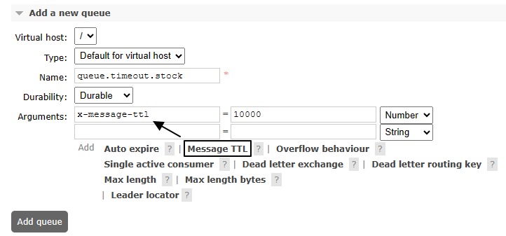
别忘了设置绑定关系：
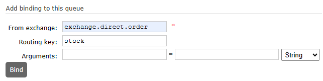
2、测试
- 不启动消费端程序
- 向设置了过期时间的队列中发送100条消息
- 等10秒后，看是否全部被过期删除
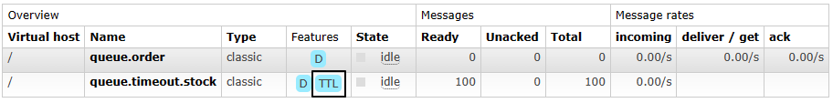
二、消息层面设置
1、设置
import org.springframework.amqp.core.Message;
import org.springframework.amqp.core.MessagePostProcessor;
@Test
public void testSendMessageTTL() {
// 1、创建消息后置处理器对象
MessagePostProcessor messagePostProcessor = (Message message) -> {
// 设定 TTL 时间，以毫秒为单位
message.getMessageProperties().setExpiration("5000");
return message;
};
// 2、发送消息
rabbitTemplate.convertAndSend(
EXCHANGE_DIRECT,
ROUTING_KEY,
"Hello atguigu", messagePostProcessor);
}
2、查看效果
这次我们是发送到普通队列上：
操作011：死信
上一篇：🔗 Operation010-MessageTimeout · 下一篇：🔗 Operation012-DelayPlugin
一、测试相关准备
1、创建死信交换机和死信队列
常规设定即可，没有特殊设置：
- 死信交换机：exchange.dead.letter.video
- 死信队列：queue.dead.letter.video
- 死信路由键：routing.key.dead.letter.video
2、创建正常交换机和正常队列
注意：一定要注意正常队列有诸多限定和设置，这样才能让无法处理的消息进入死信交换机
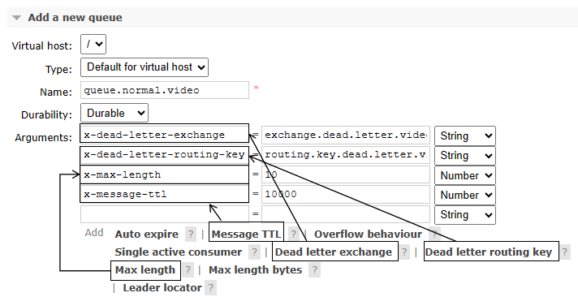
- 正常交换机：exchange.normal.video
- 正常队列：queue.normal.video
- 正常路由键：routing.key.normal.video
全部设置完成后参照如下细节：
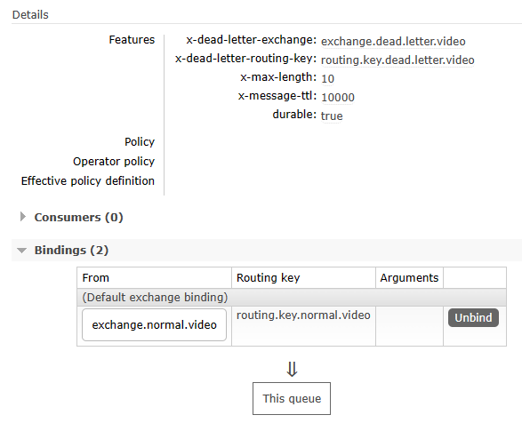
3、Java代码中的相关常量声明
public static final String EXCHANGE_NORMAL = "exchange.normal.video";
public static final String EXCHANGE_DEAD_LETTER = "exchange.dead.letter.video";
public static final String ROUTING_KEY_NORMAL = "routing.key.normal.video";
public static final String ROUTING_KEY_DEAD_LETTER = "routing.key.dead.letter.video";
public static final String QUEUE_NORMAL = "queue.normal.video";
public static final String QUEUE_DEAD_LETTER = "queue.dead.letter.video";
二、消费端拒收消息
1、发送消息的代码
@Test
public void testSendMessageButReject() {
rabbitTemplate
.convertAndSend(
EXCHANGE_NORMAL,
ROUTING_KEY_NORMAL,
"测试死信情况1：消息被拒绝");
}
2、接收消息的代码
①监听正常队列
@RabbitListener(queues = {QUEUE_NORMAL})
public void processMessageNormal(Message message, Channel channel) throws IOException {
// 监听正常队列，但是拒绝消息
log.info("★[normal]消息接收到，但我拒绝。");
channel.basicReject(message.getMessageProperties().getDeliveryTag(), false);
}
②监听死信队列
@RabbitListener(queues = {QUEUE_DEAD_LETTER})
public void processMessageDead(String dataString, Message message, Channel channel) throws IOException {
// 监听死信队列
log.info("★[dead letter]dataString = " + dataString);
log.info("★[dead letter]我是死信监听方法，我接收到了死信消息");
channel.basicAck(message.getMessageProperties().getDeliveryTag(), false);
}
3、执行结果
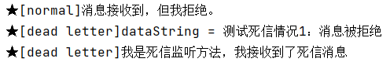
三、消息数量超过队列容纳极限
1、发送消息的代码
@Test
public void testSendMultiMessage() {
for (int i = 0; i < 20; i++) {
rabbitTemplate.convertAndSend(
EXCHANGE_NORMAL,
ROUTING_KEY_NORMAL,
"测试死信情况2：消息数量超过队列的最大容量" + i);
}
}
2、接收消息的代码
消息接收代码不再拒绝消息：
@RabbitListener(queues = {QUEUE_NORMAL})
public void processMessageNormal(Message message, Channel channel) throws IOException {
// 监听正常队列
log.info("★[normal]消息接收到。");
channel.basicAck(message.getMessageProperties().getDeliveryTag(), false);
}
重启微服务使代码修改生效。
3、执行效果
正常队列的参数如下图所示：
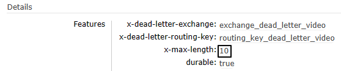
生产者发送20条消息之后，消费端死信队列接收到前10条消息：
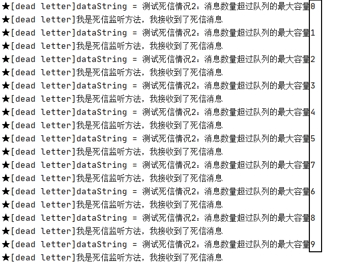
四、消息超时未消费
1、发送消息的代码
正常发送一条消息即可，所以使用第一个例子的代码。
@Test
public void testSendMessageTimeout() {
rabbitTemplate
.convertAndSend(
EXCHANGE_NORMAL,
ROUTING_KEY_NORMAL,
"测试死信情况3：消息超时");
}
2、执行效果
队列参数生效：
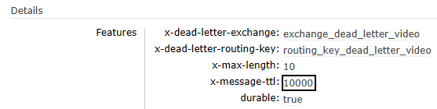
因为没有消费端监听程序，所以消息未超时前滞留在队列中：
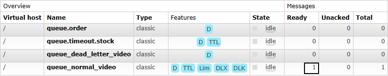
消息超时后，进入死信队列：
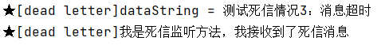
操作012：延迟插件
上一篇：🔗 Operation011-DeadLetter · 下一篇：🔗 Operation013-Tx-Producer
一、插件简介
- 官网地址：https://github.com/rabbitmq/rabbitmq-delayed-message-exchange
- 延迟极限：最多两天
二、插件安装
1、确定卷映射目录
docker inspect rabbitmq
运行结果：
"Mounts": [
{
"Type": "volume",
"Name": "rabbitmq-plugin",
"Source": "/var/lib/docker/volumes/rabbitmq-plugin/_data",
"Destination": "/plugins",
"Driver": "local",
"Mode": "z",
"RW": true,
"Propagation": ""
},
{
"Type": "volume",
"Name": "cca7bc3012f5b76bd6c47a49ca6911184f9076f5f6263b41f4b9434a7f269b11",
"Source": "/var/lib/docker/volumes/cca7bc3012f5b76bd6c47a49ca6911184f9076f5f6263b41f4b9434a7f269b11/_data",
"Destination": "/var/lib/rabbitmq",
"Driver": "local",
"Mode": "",
"RW": true,
"Propagation": ""
}
]
和容器内/plugins目录对应的宿主机目录是：/var/lib/docker/volumes/rabbitmq-plugin/_data
2、下载延迟插件
官方文档说明页地址：https://www.rabbitmq.com/community-plugins.html
下载插件安装文件：
wget https://github.com/rabbitmq/rabbitmq-delayed-message-exchange/releases/download/v3.13.0/rabbitmq_delayed_message_exchange-3.13.0.ez
mv rabbitmq_delayed_message_exchange-3.13.0.ez /var/lib/docker/volumes/rabbitmq-plugin/_data
3、启用插件
# 登录进入容器内部
docker exec -it rabbitmq /bin/bash
# rabbitmq-plugins命令所在目录已经配置到$PATH环境变量中了，可以直接调用
rabbitmq-plugins enable rabbitmq_delayed_message_exchange
# 退出Docker容器
exit
# 重启Docker容器
docker restart rabbitmq
4、确认
确认点1：查看当前节点已启用插件的列表：
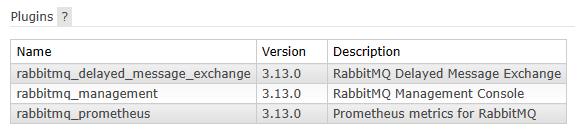
确认点2：如果创建新交换机时可以在type中看到x-delayed-message选项，那就说明插件安装好了
三、创建交换机
rabbitmq_delayed_message_exchange插件在工作时要求交换机是x-delayed-message类型才可以，创建方式如下：
关于x-delayed-type参数的理解：
原本指定交换机类型的地方使用了x-delayed-message这个值，那么这个交换机除了支持延迟消息之外，到底是direct、fanout、topic这些类型中的哪一个呢？
这里就额外使用x-delayed-type来指定交换机本身的类型
四、代码测试
1、生产者端代码
@Test
public void testSendDelayMessage() {
rabbitTemplate.convertAndSend(
EXCHANGE_DELAY,
ROUTING_KEY_DELAY,
"测试基于插件的延迟消息 [" + new SimpleDateFormat("hh:mm:ss").format(new Date()) + "]",
messageProcessor -> {
// 设置延迟时间：以毫秒为单位
messageProcessor.getMessageProperties().setHeader("x-delay", "10000");
return messageProcessor;
});
}
2、消费者端代码
①情况A：资源已创建
package com.atguigu.mq.listener;
import com.rabbitmq.client.Channel;
import lombok.extern.slf4j.Slf4j;
import org.springframework.amqp.core.Message;
import org.springframework.amqp.rabbit.annotation.RabbitListener;
import org.springframework.stereotype.Component;
import java.io.IOException;
import java.text.SimpleDateFormat;
import java.util.Date;
@Component
@Slf4j
public class MyDelayMessageListener {
public static final String QUEUE_DELAY = "queue.delay.video";
@RabbitListener(queues = {QUEUE_DELAY})
public void process(String dataString, Message message, Channel channel) throws IOException {
log.info("[生产者]" + dataString);
log.info("[消费者]" + new SimpleDateFormat("hh:mm:ss").format(new Date()));
channel.basicAck(message.getMessageProperties().getDeliveryTag(), false);
}
}
②情况B：资源未创建
package com.atguigu.mq.listener;
import com.rabbitmq.client.Channel;
import lombok.extern.slf4j.Slf4j;
import org.springframework.amqp.core.Message;
import org.springframework.amqp.rabbit.annotation.*;
import org.springframework.stereotype.Component;
import java.io.IOException;
import java.text.SimpleDateFormat;
import java.util.Date;
@Component
@Slf4j
public class MyDelayMessageListener {
public static final String EXCHANGE_DELAY = "exchange.delay.video";
public static final String ROUTING_KEY_DELAY = "routing.key.delay.video";
public static final String QUEUE_DELAY = "queue.delay.video";
@RabbitListener(bindings = @QueueBinding(
value = @Queue(value = QUEUE_DELAY, durable = "true", autoDelete = "false"),
exchange = @Exchange(
value = EXCHANGE_DELAY,
durable = "true",
autoDelete = "false",
type = "x-delayed-message",
arguments = @Argument(name = "x-delayed-type", value = "direct")),
key = {ROUTING_KEY_DELAY}
))
public void process(String dataString, Message message, Channel channel) throws IOException {
log.info("[生产者]" + dataString);
log.info("[消费者]" + new SimpleDateFormat("hh:mm:ss").format(new Date()));
channel.basicAck(message.getMessageProperties().getDeliveryTag(), false);
}
}
3、执行效果
①交换机类型
②生产者端效果
注意：使用rabbitmq_delayed_message_exchange插件后，即使消息成功发送到队列上，也会导致returnedMessage()方法执行
③消费者端效果
操作013：事务消息之生产者端
上一篇：🔗 Operation012-DelayPlugin · 下一篇：🔗 Operation014-LazyQueue
一、测试代码
1、引入依赖
<parent>
<groupId>org.springframework.boot</groupId>
<artifactId>spring-boot-starter-parent</artifactId>
<version>3.1.5</version>
</parent>
<dependencies>
<dependency>
<groupId>org.springframework.boot</groupId>
<artifactId>spring-boot-starter-amqp</artifactId>
</dependency>
<dependency>
<groupId>org.springframework.boot</groupId>
<artifactId>spring-boot-starter-test</artifactId>
</dependency>
<dependency>
<groupId>org.projectlombok</groupId>
<artifactId>lombok</artifactId>
</dependency>
</dependencies>
2、yaml配置
spring:
rabbitmq:
host: 192.168.200.100
port: 5672
username: guest
password: 123456
virtual-host: /
3、主启动类
package com.atguigu.mq;
import org.springframework.boot.SpringApplication;
import org.springframework.boot.autoconfigure.SpringBootApplication;
@SpringBootApplication
public class RabbitMQProducerMainType {
public static void main(String[] args) {
SpringApplication.run(RabbitMQProducerMainType.class, args);
}
}
4、相关配置
package com.atguigu.mq.config;
import lombok.Data;
import org.springframework.amqp.rabbit.connection.CachingConnectionFactory;
import org.springframework.amqp.rabbit.core.RabbitTemplate;
import org.springframework.amqp.rabbit.transaction.RabbitTransactionManager;
import org.springframework.context.annotation.Bean;
import org.springframework.context.annotation.Configuration;
@Configuration
@Data
public class RabbitConfig {
@Bean
public RabbitTransactionManager transactionManager(CachingConnectionFactory connectionFactory) {
return new RabbitTransactionManager(connectionFactory);
}
@Bean
public RabbitTemplate rabbitTemplate(CachingConnectionFactory connectionFactory) {
RabbitTemplate rabbitTemplate = new RabbitTemplate(connectionFactory);
rabbitTemplate.setChannelTransacted(true);
return rabbitTemplate;
}
}
5、测试代码
package com.atguigu.mq.test;
import jakarta.annotation.Resource;
import lombok.extern.slf4j.Slf4j;
import org.junit.jupiter.api.Test;
import org.springframework.amqp.rabbit.core.RabbitTemplate;
import org.springframework.boot.test.context.SpringBootTest;
@SpringBootTest
@Slf4j
public class RabbitMQTest {
public static final String EXCHANGE_NAME = "exchange.tx.dragon";
public static final String ROUTING_KEY = "routing.key.tx.dragon";
@Resource
private RabbitTemplate rabbitTemplate;
@Test
public void testSendMessageInTx() {
// 1、发送第一条消息
rabbitTemplate.convertAndSend(EXCHANGE_NAME, ROUTING_KEY, "I am a dragon(tx msg ~~~01)");
// 2、抛出异常
log.info("do bad:" + 10 / 0);
// 3、发送第二条消息
rabbitTemplate.convertAndSend(EXCHANGE_NAME, ROUTING_KEY, "I am a dragon(tx msg ~~~02)");
}
}
二、执行测试
1、未使用事务
抛出异常前的消息发送了，抛异常后的消息没有发送：
为了不影响后续操作，我们直接在管理界面这里把这条消息消费掉：
2、使用事务
①说明
因为在junit中给测试方法使用@Transactional注解默认就会回滚，所以回滚操作需要使用@RollBack注解操控
②测试提交事务的情况
@Test
@Transactional
@Rollback(value = false)
public void testSendMessageInTx() {
// 1、发送第一条消息
rabbitTemplate.convertAndSend(EXCHANGE_NAME, ROUTING_KEY, "I am a dragon(tx msg [commit] ~~~01)");
// 2、发送第二条消息
rabbitTemplate.convertAndSend(EXCHANGE_NAME, ROUTING_KEY, "I am a dragon(tx msg [commit] ~~~02)");
}
③测试回滚事务的情况
@Test
@Transactional
@Rollback(value = true)
public void testSendMessageInTx() {
// 1、发送第一条消息
rabbitTemplate.convertAndSend(EXCHANGE_NAME, ROUTING_KEY, "I am a dragon(tx msg [rollback] ~~~01)");
// 2、发送第二条消息
rabbitTemplate.convertAndSend(EXCHANGE_NAME, ROUTING_KEY, "I am a dragon(tx msg [rollback] ~~~02)");
}
操作014：惰性队列
上一篇：🔗 Operation013-Tx-Producer · 下一篇：🔗 Operation015-PriorityQueue
一、创建惰性队列
1、官网说明
队列可以创建为默认或惰性模式，模式指定方式是：
- 使用队列策略（建议）
- 设置
queue.declare参数
如果策略和队列参数同时指定，那么队列参数有更高优先级。如果队列模式是在声明时通过可选参数指定的，那么只能通过删除队列再重新创建来修改。
2、基于策略方式设定
# 登录Docker容器
docker exec -it rabbitmq /bin/bash
# 运行rabbitmqctl命令
rabbitmqctl set_policy Lazy "^lazy-queue$" '{"queue-mode":"lazy"}' --apply-to queues
命令解读：
- rabbitmqctl命令所在目录是：/opt/rabbitmq/sbin，该目录已配置到Path环境变量
- set_policy是子命令，表示设置策略
- Lazy是当前要设置的策略名称，是我们自己自定义的，不是系统定义的
- "^lazy-queue$"是用正则表达式限定的队列名称，凡是名称符合这个正则表达式的队列都会应用这里的设置
- '{"queue-mode":"lazy"}'是一个JSON格式的参数设置指定了队列的模式为"lazy"
-
–-apply-to参数指定该策略将应用于队列（queues）级别
-
命令执行后，所有名称符合正则表达式的队列都会应用指定策略，包括未来新创建的队列
如果需要修改队列模式可以执行如下命令（不必删除队列再重建）：
rabbitmqctl set_policy Lazy "^lazy-queue$" '{"queue-mode":"default"}' --apply-to queues
3、在声明队列时使用参数设定
- 参数名称：x-queue-mode
- 可用参数值：
- default
- lazy
- 不设置就是取值为default
Java代码原生API设置方式：
Map<String, Object> args = new HashMap<String, Object>();
args.put("x-queue-mode", "lazy");
channel.queueDeclare("myqueue", false, false, false, args);
Java代码注解设置方式：
@Queue(value = QUEUE_NAME, durable = "true", autoDelete = "false", arguments = {
@Argument(name = "x-queue-mode", value = "lazy")
})
二、实操演练
1、生产者端代码
①配置POM
<parent>
<groupId>org.springframework.boot</groupId>
<artifactId>spring-boot-starter-parent</artifactId>
<version>3.1.5</version>
</parent>
<dependencies>
<dependency>
<groupId>org.springframework.boot</groupId>
<artifactId>spring-boot-starter-amqp</artifactId>
</dependency>
<dependency>
<groupId>org.springframework.boot</groupId>
<artifactId>spring-boot-starter-test</artifactId>
</dependency>
<dependency>
<groupId>org.projectlombok</groupId>
<artifactId>lombok</artifactId>
</dependency>
</dependencies>
②配置YAML
spring:
rabbitmq:
host: 192.168.200.100
port: 5672
username: guest
password: 123456
virtual-host: /
③主启动类
package com.atguigu.mq;
import org.springframework.boot.SpringApplication;
import org.springframework.boot.autoconfigure.SpringBootApplication;
@SpringBootApplication
public class RabbitMQLazyProducer {
public static void main(String[] args) {
SpringApplication.run(RabbitMQLazyProducer.class, args);
}
}
④发送消息
package com.atguigu.mq.test;
import jakarta.annotation.Resource;
import org.junit.jupiter.api.Test;
import org.springframework.amqp.rabbit.core.RabbitTemplate;
import org.springframework.boot.test.context.SpringBootTest;
@SpringBootTest
public class RabbitMQTest {
public static final String EXCHANGE_LAZY_NAME = "exchange.atguigu.lazy";
public static final String ROUTING_LAZY_KEY = "routing.key.atguigu.lazy";
@Resource
private RabbitTemplate rabbitTemplate;
@Test
public void testSendMessage() {
rabbitTemplate.convertAndSend(EXCHANGE_LAZY_NAME, ROUTING_LAZY_KEY, "I am a message for test lazy queue.");
}
}
2、消费者端代码
①配置POM
<parent>
<groupId>org.springframework.boot</groupId>
<artifactId>spring-boot-starter-parent</artifactId>
<version>3.1.5</version>
</parent>
<dependencies>
<dependency>
<groupId>org.springframework.boot</groupId>
<artifactId>spring-boot-starter-amqp</artifactId>
</dependency>
<dependency>
<groupId>org.springframework.boot</groupId>
<artifactId>spring-boot-starter-web</artifactId>
</dependency>
<dependency>
<groupId>org.projectlombok</groupId>
<artifactId>lombok</artifactId>
</dependency>
</dependencies>
②配置YAML
spring:
rabbitmq:
host: 192.168.200.100
port: 5672
username: guest
password: 123456
virtual-host: /
③主启动类
package com.atguigu.mq;
import org.springframework.boot.SpringApplication;
import org.springframework.boot.autoconfigure.SpringBootApplication;
@SpringBootApplication
public class RabbitMQLazyConsumerMainType {
public static void main(String[] args) {
SpringApplication.run(RabbitMQLazyConsumerMainType.class, args);
}
}
④监听器
package com.atguigu.mq.listener;
import com.rabbitmq.client.Channel;
import lombok.extern.slf4j.Slf4j;
import org.springframework.amqp.core.Message;
import org.springframework.amqp.rabbit.annotation.*;
import org.springframework.stereotype.Component;
@Component
@Slf4j
public class MyLazyMessageProcessor {
public static final String EXCHANGE_LAZY_NAME = "exchange.atguigu.lazy";
public static final String ROUTING_LAZY_KEY = "routing.key.atguigu.lazy";
public static final String QUEUE_LAZY_NAME = "queue.atguigu.lazy";
@RabbitListener(bindings = @QueueBinding(
value = @Queue(value = QUEUE_LAZY_NAME, durable = "true", autoDelete = "false", arguments = {
@Argument(name = "x-queue-mode", value = "lazy")
}),
exchange = @Exchange(value = EXCHANGE_LAZY_NAME, durable = "true", autoDelete = "false"),
key = {ROUTING_LAZY_KEY}
))
public void processMessageLazy(String data, Message message, Channel channel) {
log.info("消费端接收到消息：" + data);
}
}
三、测试
-
先启动消费端
-
基于消费端@RabbitListener注解中的配置，自动创建了队列
- 发送消息
操作015：优先级队列
上一篇：🔗 Operation014-LazyQueue · 下一篇：🔗 Operation016-Cluster
一、创建相关资源
1、创建交换机
exchange.test.priority
2、创建队列
queue.test.priority
x-max-priority
3、队列绑定交换机
二、生产者发送消息
1、配置POM
<parent>
<groupId>org.springframework.boot</groupId>
<artifactId>spring-boot-starter-parent</artifactId>
<version>3.1.5</version>
</parent>
<dependencies>
<dependency>
<groupId>org.springframework.boot</groupId>
<artifactId>spring-boot-starter-amqp</artifactId>
</dependency>
<dependency>
<groupId>org.springframework.boot</groupId>
<artifactId>spring-boot-starter-test</artifactId>
</dependency>
<dependency>
<groupId>org.projectlombok</groupId>
<artifactId>lombok</artifactId>
</dependency>
</dependencies>
2、配置YAML
spring:
rabbitmq:
host: 192.168.200.100
port: 5672
username: guest
password: 123456
virtual-host: /
3、主启动类
package com.atguigu.mq;
import org.springframework.boot.SpringApplication;
import org.springframework.boot.autoconfigure.SpringBootApplication;
@SpringBootApplication
public class RabbitMQPriorityProducer {
public static void main(String[] args) {
SpringApplication.run(RabbitMQPriorityProducer.class, args);
}
}
4、发送消息
- 不要启动消费者程序，让多条不同优先级的消息滞留在队列中
- 第一次发送优先级为1的消息
- 第二次发送优先级为2的消息
- 第三次发送优先级为3的消息
- 先发送的消息优先级低，后发送的消息优先级高，将来看看消费端是不是先收到优先级高的消息
①第一次发送优先级为1的消息
package com.atguigu.mq.test;
import jakarta.annotation.Resource;
import org.junit.jupiter.api.Test;
import org.springframework.amqp.rabbit.core.RabbitTemplate;
import org.springframework.boot.test.context.SpringBootTest;
@SpringBootTest
public class RabbitMQTest {
public static final String EXCHANGE_PRIORITY = "exchange.test.priority";
public static final String ROUTING_KEY_PRIORITY = "routing.key.test.priority";
@Resource
private RabbitTemplate rabbitTemplate;
@Test
public void testSendMessage() {
rabbitTemplate.convertAndSend(EXCHANGE_PRIORITY, ROUTING_KEY_PRIORITY, "I am a message with priority 1.", message->{
message.getMessageProperties().setPriority(1);
return message;
});
}
}
②第二次发送优先级为2的消息
@Test
public void testSendMessage() {
rabbitTemplate.convertAndSend(EXCHANGE_PRIORITY, ROUTING_KEY_PRIORITY, "I am a message with priority 2.", message->{
message.getMessageProperties().setPriority(2);
return message;
});
}
③第三次发送优先级为3的消息
@Test
public void testSendMessage() {
rabbitTemplate.convertAndSend(EXCHANGE_PRIORITY, ROUTING_KEY_PRIORITY, "I am a message with priority 3.", message->{
message.getMessageProperties().setPriority(3);
return message;
});
}
三、消费端接收消息
1、配置POM
<parent>
<groupId>org.springframework.boot</groupId>
<artifactId>spring-boot-starter-parent</artifactId>
<version>3.1.5</version>
</parent>
<dependencies>
<dependency>
<groupId>org.springframework.boot</groupId>
<artifactId>spring-boot-starter-amqp</artifactId>
</dependency>
<dependency>
<groupId>org.springframework.boot</groupId>
<artifactId>spring-boot-starter-web</artifactId>
</dependency>
<dependency>
<groupId>org.projectlombok</groupId>
<artifactId>lombok</artifactId>
</dependency>
</dependencies>
2、配置YAML
spring:
rabbitmq:
host: 192.168.200.100
port: 5672
username: guest
password: 123456
virtual-host: /
3、主启动类
package com.atguigu.mq;
import org.springframework.boot.SpringApplication;
import org.springframework.boot.autoconfigure.SpringBootApplication;
@SpringBootApplication
public class RabbitMQPriorityConsumer {
public static void main(String[] args) {
SpringApplication.run(RabbitMQPriorityConsumer.class, args);
}
}
4、监听器
package com.atguigu.mq.listener;
import com.rabbitmq.client.Channel;
import lombok.extern.slf4j.Slf4j;
import org.springframework.amqp.core.Message;
import org.springframework.amqp.rabbit.annotation.*;
import org.springframework.stereotype.Component;
@Slf4j
@Component
public class MyMessageProcessor {
public static final String QUEUE_PRIORITY = "queue.test.priority";
@RabbitListener(queues = {QUEUE_PRIORITY})
public void processPriorityMessage(String data, Message message, Channel channel) throws IOException {
log.info(data);
channel.basicAck(message.getMessageProperties().getDeliveryTag(), false);
}
}
5、测试效果
对于已经滞留服务器的消息，只要消费端一启动，就能够收到消息队列的投递，打印效果如下：
操作016：集群搭建
上一篇：🔗 Operation015-PriorityQueue · 下一篇：🔗 Operation017-Quorum
一、安装RabbitMQ
1、前置要求
CentOS发行版的版本≥CentOS 8 Stream
镜像下载地址：https://mirrors.163.com/centos/8-stream/isos/x86_64/CentOS-Stream-8-20240318.0-x86_64-dvd1.iso
RabbitMQ安装方式官方指南：
2、安装Erlang环境
①创建yum库配置文件
vim /etc/yum.repos.d/rabbitmq.repo
②加入配置内容
以下内容来自官方文档：https://www.rabbitmq.com/docs/install-rpm
# In /etc/yum.repos.d/rabbitmq.repo
##
## Zero dependency Erlang RPM
##
[modern-erlang]
name=modern-erlang-el8
# uses a Cloudsmith mirror @ yum.novemberain.com in addition to its Cloudsmith upstream.
# Unlike Cloudsmith, the mirror does not have any traffic quotas
baseurl=https://yum1.novemberain.com/erlang/el/8/$basearch
https://yum2.novemberain.com/erlang/el/8/$basearch
https://dl.cloudsmith.io/public/rabbitmq/rabbitmq-erlang/rpm/el/8/$basearch
repo_gpgcheck=1
enabled=1
gpgkey=https://github.com/rabbitmq/signing-keys/releases/download/3.0/cloudsmith.rabbitmq-erlang.E495BB49CC4BBE5B.key
gpgcheck=1
sslverify=1
sslcacert=/etc/pki/tls/certs/ca-bundle.crt
metadata_expire=300
pkg_gpgcheck=1
autorefresh=1
type=rpm-md
[modern-erlang-noarch]
name=modern-erlang-el8-noarch
# uses a Cloudsmith mirror @ yum.novemberain.com.
# Unlike Cloudsmith, it does not have any traffic quotas
baseurl=https://yum1.novemberain.com/erlang/el/8/noarch
https://yum2.novemberain.com/erlang/el/8/noarch
https://dl.cloudsmith.io/public/rabbitmq/rabbitmq-erlang/rpm/el/8/noarch
repo_gpgcheck=1
enabled=1
gpgkey=https://github.com/rabbitmq/signing-keys/releases/download/3.0/cloudsmith.rabbitmq-erlang.E495BB49CC4BBE5B.key
https://github.com/rabbitmq/signing-keys/releases/download/3.0/rabbitmq-release-signing-key.asc
gpgcheck=1
sslverify=1
sslcacert=/etc/pki/tls/certs/ca-bundle.crt
metadata_expire=300
pkg_gpgcheck=1
autorefresh=1
type=rpm-md
[modern-erlang-source]
name=modern-erlang-el8-source
# uses a Cloudsmith mirror @ yum.novemberain.com.
# Unlike Cloudsmith, it does not have any traffic quotas
baseurl=https://yum1.novemberain.com/erlang/el/8/SRPMS
https://yum2.novemberain.com/erlang/el/8/SRPMS
https://dl.cloudsmith.io/public/rabbitmq/rabbitmq-erlang/rpm/el/8/SRPMS
repo_gpgcheck=1
enabled=1
gpgkey=https://github.com/rabbitmq/signing-keys/releases/download/3.0/cloudsmith.rabbitmq-erlang.E495BB49CC4BBE5B.key
https://github.com/rabbitmq/signing-keys/releases/download/3.0/rabbitmq-release-signing-key.asc
gpgcheck=1
sslverify=1
sslcacert=/etc/pki/tls/certs/ca-bundle.crt
metadata_expire=300
pkg_gpgcheck=1
autorefresh=1
##
## RabbitMQ Server
##
[rabbitmq-el8]
name=rabbitmq-el8
baseurl=https://yum2.novemberain.com/rabbitmq/el/8/$basearch
https://yum1.novemberain.com/rabbitmq/el/8/$basearch
https://dl.cloudsmith.io/public/rabbitmq/rabbitmq-server/rpm/el/8/$basearch
repo_gpgcheck=1
enabled=1
# Cloudsmith's repository key and RabbitMQ package signing key
gpgkey=https://github.com/rabbitmq/signing-keys/releases/download/3.0/cloudsmith.rabbitmq-server.9F4587F226208342.key
https://github.com/rabbitmq/signing-keys/releases/download/3.0/rabbitmq-release-signing-key.asc
gpgcheck=1
sslverify=1
sslcacert=/etc/pki/tls/certs/ca-bundle.crt
metadata_expire=300
pkg_gpgcheck=1
autorefresh=1
type=rpm-md
[rabbitmq-el8-noarch]
name=rabbitmq-el8-noarch
baseurl=https://yum2.novemberain.com/rabbitmq/el/8/noarch
https://yum1.novemberain.com/rabbitmq/el/8/noarch
https://dl.cloudsmith.io/public/rabbitmq/rabbitmq-server/rpm/el/8/noarch
repo_gpgcheck=1
enabled=1
# Cloudsmith's repository key and RabbitMQ package signing key
gpgkey=https://github.com/rabbitmq/signing-keys/releases/download/3.0/cloudsmith.rabbitmq-server.9F4587F226208342.key
https://github.com/rabbitmq/signing-keys/releases/download/3.0/rabbitmq-release-signing-key.asc
gpgcheck=1
sslverify=1
sslcacert=/etc/pki/tls/certs/ca-bundle.crt
metadata_expire=300
pkg_gpgcheck=1
autorefresh=1
type=rpm-md
[rabbitmq-el8-source]
name=rabbitmq-el8-source
baseurl=https://yum2.novemberain.com/rabbitmq/el/8/SRPMS
https://yum1.novemberain.com/rabbitmq/el/8/SRPMS
https://dl.cloudsmith.io/public/rabbitmq/rabbitmq-server/rpm/el/8/SRPMS
repo_gpgcheck=1
enabled=1
gpgkey=https://github.com/rabbitmq/signing-keys/releases/download/3.0/cloudsmith.rabbitmq-server.9F4587F226208342.key
gpgcheck=0
sslverify=1
sslcacert=/etc/pki/tls/certs/ca-bundle.crt
metadata_expire=300
pkg_gpgcheck=1
autorefresh=1
type=rpm-md
③更新yum库
--nobest表示所需安装包即使不是最佳选择也接受
yum update -y --nobest
④正式安装Erlang
yum install -y erlang
3、安装RabbitMQ
# 导入GPG密钥
rpm --import 'https://github.com/rabbitmq/signing-keys/releases/download/3.0/rabbitmq-release-signing-key.asc'
rpm --import 'https://github.com/rabbitmq/signing-keys/releases/download/3.0/cloudsmith.rabbitmq-erlang.E495BB49CC4BBE5B.key'
rpm --import 'https://github.com/rabbitmq/signing-keys/releases/download/3.0/cloudsmith.rabbitmq-server.9F4587F226208342.key'
# 下载 RPM 包
wget https://github.com/rabbitmq/rabbitmq-server/releases/download/v3.13.0/rabbitmq-server-3.13.0-1.el8.noarch.rpm
# 安装
rpm -ivh rabbitmq-server-3.13.0-1.el8.noarch.rpm
4、RabbitMQ基础配置
# 启用管理界面插件
rabbitmq-plugins enable rabbitmq_management
# 启动 RabbitMQ 服务：
systemctl start rabbitmq-server
# 将 RabbitMQ 服务设置为开机自动启动
systemctl enable rabbitmq-server
# 新增登录账号密码
rabbitmqctl add_user atguigu 123456
# 设置登录账号权限
rabbitmqctl set_user_tags atguigu administrator
rabbitmqctl set_permissions -p / atguigu ".*" ".*" ".*"
# 配置所有稳定功能 flag 启用
rabbitmqctl enable_feature_flag all
# 重启RabbitMQ服务生效
systemctl restart rabbitmq-server
5、收尾工作
rm -rf /etc/yum.repos.d/rabbitmq.repo
二、克隆VMWare虚拟机
1、目标
通过克隆操作，一共准备三台VMWare虚拟机
| 集群节点名称 | 虚拟机 IP 地址 |
|---|---|
| node01 | 192.168.200.100 |
| node02 | 192.168.200.150 |
| node03 | 192.168.200.200 |
2、克隆虚拟机
3、给新机设置 IP 地址
在CentOS 7中，可以使用nmcli命令行工具修改IP地址。以下是具体步骤：
- 查看网络连接信息：
nmcli con show
- 停止指定的网络连接（将
<connection_name>替换为实际的网络连接名称）：
nmcli con down <connection_name>
- 修改IP地址（将
<connection_name>替换为实际的网络连接名称，将<new_ip_address>替换为新的IP地址，将<subnet_mask>替换为子网掩码，将<gateway>替换为网关）：
# <new_ip_address>/<subnet_mask>这里是 CIDR 表示法
nmcli con mod <connection_name> ipv4.addresses <new_ip_address>/<subnet_mask>
nmcli con mod <connection_name> ipv4.gateway <gateway>
nmcli con mod <connection_name> ipv4.method manual
- 启动网络连接：
nmcli con up <connection_name>
- 验证新的IP地址是否生效：
ip addr show
4、修改主机名称
主机名称会被RabbitMQ作为集群中的节点名称，后面会用到，所以需要设置一下。
修改方式如下：
vim /etc/hostname
5、保险措施
为了在后续操作过程中，万一遇到操作失误，友情建议拍摄快照。
三、集群节点彼此发现
1、node01设置
①设置 IP 地址到主机名称的映射
修改文件/etc/hosts，追加如下内容：
192.168.200.100 node01
192.168.200.150 node02
192.168.200.200 node03
②查看当前RabbitMQ节点的Cookie值并记录
[root@node01 ~]# cat /var/lib/rabbitmq/.erlang.cookie
NOTUPTIZIJONXDWWQPOJ
③重置节点应用
rabbitmqctl stop_app
rabbitmqctl reset
rabbitmqctl start_app
2、node02设置
①设置 IP 地址到主机名称的映射
修改文件/etc/hosts，追加如下内容：
192.168.200.100 node01
192.168.200.150 node02
192.168.200.200 node03
②修改当前RabbitMQ节点的Cookie值
node02和node03都改成和node01一样：
vim /var/lib/rabbitmq/.erlang.cookie
③重置节点应用并加入集群
rabbitmqctl stop_app
rabbitmqctl reset
rabbitmqctl join_cluster rabbit@node01
rabbitmqctl start_app
3、node03设置
①设置 IP 地址到主机名称的映射
修改文件/etc/hosts，追加如下内容：
192.168.200.100 node01
192.168.200.150 node02
192.168.200.200 node03
②修改当前RabbitMQ节点的Cookie值
node02和node03都改成和node01一样：
vim /var/lib/rabbitmq/.erlang.cookie
③重置节点应用并加入集群
rabbitmqctl stop_app
rabbitmqctl reset
rabbitmqctl join_cluster rabbit@node01
rabbitmqctl start_app
④查看集群状态
rabbitmqctl cluster_status
4、附录
如有需要踢出某个节点，则按下面操作执行：
# 被踢出的节点：
rabbitmqctl stop_app
rabbitmqctl reset
rabbitmqctl start_app
# 节点1
rabbitmqctl forget_cluster_node rabbit@node02
四、负载均衡：Management UI
1、说明
- 其实访问任何一个RabbitMQ实例的管理界面都是对集群操作，所以配置负载均衡通过统一入口访问在我们学习期间就是锦上添花
- 先给管理界面做负载均衡，然后方便我们在管理界面上创建交换机、队列等操作
2、安装HAProxy
yum install -y haproxy
haproxy -v
systemctl start haproxy
systemctl enable haproxy
3、修改配置文件
配置文件位置：
/etc/haproxy/haproxy.cfg
在配置文件末尾增加如下内容：
frontend rabbitmq_ui_frontend bind 192.168.200.100:22222 mode http default_backend rabbitmq_ui_backend
backend rabbitmq_ui_backend mode http balance roundrobin option httpchk GET / server rabbitmq_ui1 192.168.200.100:15672 check server rabbitmq_ui2 192.168.200.150:15672 check server rabbitmq_ui3 192.168.200.200:15672 check
设置SELinux策略，允许HAProxy拥有权限连接任意端口：
setsebool -P haproxy_connect_any=1
SELinux是Linux系统中的安全模块，它可以限制进程的权限以提高系统的安全性。在某些情况下，SELinux可能会阻止HAProxy绑定指定的端口，这就需要通过设置域（domain）的安全策略来解决此问题。
通过执行
setsebool -P haproxy_connect_any=1命令，您已经为HAProxy设置了一个布尔值，允许HAProxy连接到任意端口。这样，HAProxy就可以成功绑定指定的socket，并正常工作。
重启HAProxy：
systemctl restart haproxy
4、测试效果
五、负载均衡：核心功能
1、增加配置
frontend rabbitmq_frontend bind 192.168.200.100:11111 mode tcp default_backend rabbitmq_backend
backend rabbitmq_backend mode tcp balance roundrobin server rabbitmq1 192.168.200.100:5672 check server rabbitmq2 192.168.200.150:5672 check server rabbitmq3 192.168.200.200:5672 check
重启HAProxy服务：
systemctl restart haproxy
3、测试
①创建组件
- 交换机：exchange.cluster.test
- 队列：queue.cluster.test
- 路由键：routing.key.cluster.test
②创建生产者端程序
[1]配置POM
<parent>
<groupId>org.springframework.boot</groupId>
<artifactId>spring-boot-starter-parent</artifactId>
<version>3.1.5</version>
</parent>
<dependencies>
<dependency>
<groupId>org.springframework.boot</groupId>
<artifactId>spring-boot-starter-amqp</artifactId>
</dependency>
<dependency>
<groupId>org.springframework.boot</groupId>
<artifactId>spring-boot-starter-test</artifactId>
</dependency>
<dependency>
<groupId>org.projectlombok</groupId>
<artifactId>lombok</artifactId>
</dependency>
</dependencies>
[2]主启动类
package com.atguigu.mq;
import org.springframework.boot.SpringApplication;
import org.springframework.boot.autoconfigure.SpringBootApplication;
@SpringBootApplication
public class RabbitMQProducerMainType {
public static void main(String[] args) {
SpringApplication.run(RabbitMQProducerMainType.class, args);
}
}
[3]配置YAML
spring:
rabbitmq:
host: 192.168.200.100
port: 11111
username: atguigu
password: 123456
virtual-host: /
publisher-confirm-type: CORRELATED # 交换机的确认
publisher-returns: true # 队列的确认
logging:
level:
com.atguigu.mq.config.MQProducerAckConfig: info
[4]配置类
package com.atguigu.mq.config;
import jakarta.annotation.PostConstruct;
import lombok.extern.slf4j.Slf4j;
import org.springframework.amqp.core.ReturnedMessage;
import org.springframework.amqp.rabbit.connection.CorrelationData;
import org.springframework.amqp.rabbit.core.RabbitTemplate;
import org.springframework.beans.factory.annotation.Autowired;
import org.springframework.context.annotation.Configuration;
@Configuration
@Slf4j
public class MQProducerAckConfig implements RabbitTemplate.ConfirmCallback, RabbitTemplate.ReturnsCallback{
@Autowired
private RabbitTemplate rabbitTemplate;
@PostConstruct
public void init() {
rabbitTemplate.setConfirmCallback(this);
rabbitTemplate.setReturnsCallback(this);
}
@Override
public void confirm(CorrelationData correlationData, boolean ack, String cause) {
if (ack) {
log.info("消息发送到交换机成功！数据：" + correlationData);
} else {
log.info("消息发送到交换机失败！数据：" + correlationData + " 原因：" + cause);
}
}
@Override
public void returnedMessage(ReturnedMessage returned) {
log.info("消息主体: " + new String(returned.getMessage().getBody()));
log.info("应答码: " + returned.getReplyCode());
log.info("描述：" + returned.getReplyText());
log.info("消息使用的交换器 exchange : " + returned.getExchange());
log.info("消息使用的路由键 routing : " + returned.getRoutingKey());
}
}
[5] Junit测试类
package com.atguigu.mq.test;
import jakarta.annotation.Resource;
import org.junit.jupiter.api.Test;
import org.springframework.amqp.rabbit.core.RabbitTemplate;
import org.springframework.boot.test.context.SpringBootTest;
@SpringBootTest
public class RabbitMQTest {
@Resource
private RabbitTemplate rabbitTemplate;
public static final String EXCHANGE_CLUSTER_TEST = "exchange.cluster.test";
public static final String ROUTING_KEY_CLUSTER_TEST = "routing.key.cluster.test";
@Test
public void testSendMessage() {
rabbitTemplate.convertAndSend(EXCHANGE_CLUSTER_TEST, ROUTING_KEY_CLUSTER_TEST, "message test cluster~~~");
}
}
③创建消费端程序
[1]配置POM
<parent>
<groupId>org.springframework.boot</groupId>
<artifactId>spring-boot-starter-parent</artifactId>
<version>3.1.5</version>
</parent>
<dependencies>
<dependency>
<groupId>org.springframework.boot</groupId>
<artifactId>spring-boot-starter-amqp</artifactId>
</dependency>
<dependency>
<groupId>org.springframework.boot</groupId>
<artifactId>spring-boot-starter-web</artifactId>
</dependency>
<dependency>
<groupId>org.projectlombok</groupId>
<artifactId>lombok</artifactId>
</dependency>
</dependencies>
[2]主启动类
package com.atguigu.mq;
import org.springframework.boot.SpringApplication;
import org.springframework.boot.autoconfigure.SpringBootApplication;
@SpringBootApplication
public class RabbitMQProducerMainType {
public static void main(String[] args) {
SpringApplication.run(RabbitMQProducerMainType.class, args);
}
}
[3]配置YAML
spring:
rabbitmq:
host: 192.168.200.100
port: 11111
username: atguigu
password: 123456
virtual-host: /
listener:
simple:
acknowledge-mode: manual
logging:
level:
com.atguigu.mq.listener.MyProcessor: info
[4]监听器
package com.atguigu.mq.listener;
import com.rabbitmq.client.Channel;
import lombok.extern.slf4j.Slf4j;
import org.springframework.amqp.core.Message;
import org.springframework.amqp.rabbit.annotation.RabbitListener;
import org.springframework.stereotype.Component;
import java.io.IOException;
@Component
@Slf4j
public class MyProcessor {
@RabbitListener(queues = {"queue.cluster.test"})
public void processNormalQueueMessage(String data, Message message, Channel channel)
throws IOException {
log.info("消费端：" + data);
channel.basicAck(message.getMessageProperties().getDeliveryTag(), false);
}
}
[5]运行效果
六、镜像队列
1、提出问题
现在我们创建过的队列，它是属于节点1的：
现在我们停掉节点1的rabbit应用：
# 停止rabbit应用
rabbitmqctl stop_app
再次发送消息：
为了后续操作，再重新启动rabbit应用
rabbitmqctl start_app
2、创建策略使队列镜像化
3、创建新的队列
要求：队列名称必须符合策略中指定的正则表达式
绑定交换机：
4、测试
节点1关闭rabbit应用
然后就发现两个镜像队列自动分布到了节点2和节点3上：
调整Java代码中的组件名称：
public static final String EXCHANGE_CLUSTER_TEST = "exchange.cluster.test";
public static final String ROUTING_KEY_MIRROR_TEST = "routing.key.mirror.test";
public static final String QUEUE_MIRROR_TEST = "mirror.queue.test";
操作017：仲裁队列
上一篇：🔗 Operation016-Cluster · 下一篇：🔗 Operation018-Stream
一、创建仲裁队列
说明：鉴于仲裁队列的功能，肯定是需要在前面集群的基础上操作！
1、创建交换机
和仲裁队列绑定的交换机没有特殊，我们还是创建一个direct交换机即可
交换机名称：exchange.quorum.test
2、创建仲裁队列
队列名称：queue.quorum.test
3、绑定交换机
路由键：routing.key.quorum.test
二、测试仲裁队列
1、常规测试
像使用经典队列一样发送消息、消费消息
①生产者端
public static final String EXCHANGE_QUORUM_TEST = "exchange.quorum.test";
public static final String ROUTING_KEY_QUORUM_TEST = "routing.key.quorum.test";
@Test
public void testSendMessageToQuorum() {
rabbitTemplate.convertAndSend(EXCHANGE_QUORUM_TEST, ROUTING_KEY_QUORUM_TEST, "message test quorum ~~~");
}
②消费者端
public static final String QUEUE_QUORUM_TEST = "queue.quorum.test";
@RabbitListener(queues = {QUEUE_QUORUM_TEST})
public void quorumMessageProcess(String data, Message message, Channel channel) throws IOException {
log.info("消费端：" + data);
channel.basicAck(message.getMessageProperties().getDeliveryTag(), false);
}
2、高可用测试
①停止某个节点的rabbit应用
# 停止rabbit应用
rabbitmqctl stop_app
②查看仲裁队列对应的节点情况
③再次发送消息
收发消息仍然正常
操作018：Stream Queue
上一篇：🔗 Operation017-Quorum · 下一篇：🔗 Operation019-Federation
一、启用插件
说明：只有启用了Stream插件，才能使用流式队列的完整功能
在集群每个节点中依次执行如下操作：
# 启用Stream插件
rabbitmq-plugins enable rabbitmq_stream
# 重启rabbit应用
rabbitmqctl stop_app
rabbitmqctl start_app
# 查看插件状态
rabbitmq-plugins list
二、负载均衡
在文件/etc/haproxy/haproxy.cfg末尾追加：
frontend rabbitmq_stream_frontend
bind 192.168.200.100:33333
mode tcp
default_backend rabbitmq_stream_backend
backend rabbitmq_stream_backend
mode tcp
balance roundrobin
server rabbitmq1 192.168.200.100:5552 check
server rabbitmq2 192.168.200.150:5552 check
server rabbitmq3 192.168.200.200:5552 check
三、Java代码
1、引入依赖
Stream 专属 Java 客户端官方网址：https://github.com/rabbitmq/rabbitmq-stream-java-client
Stream 专属 Java 客户端官方文档网址：https://rabbitmq.github.io/rabbitmq-stream-java-client/stable/htmlsingle/
<dependencies>
<dependency>
<groupId>com.rabbitmq</groupId>
<artifactId>stream-client</artifactId>
<version>0.15.0</version>
</dependency>
<dependency>
<groupId>org.slf4j</groupId>
<artifactId>slf4j-api</artifactId>
<version>1.7.30</version>
</dependency>
<dependency>
<groupId>ch.qos.logback</groupId>
<artifactId>logback-classic</artifactId>
<version>1.2.3</version>
</dependency>
</dependencies>
2、创建Stream
说明：不需要创建交换机
①代码方式创建
Environment environment = Environment.builder()
.host("192.168.200.100")
.port(33333)
.username("atguigu")
.password("123456")
.build();
environment.streamCreator().stream("stream.atguigu.test2").create();
environment.close();
②ManagementUI创建
3、生产者端程序
①内部机制说明
[1]官方文档
Internally, the
Environmentwill query the broker to find out about the topology of the stream and will create or re-use a connection to publish to the leader node of the stream.
翻译：
在内部，Environment将查询broker以了解流的拓扑结构，并将创建或重用连接以发布到流的 leader 节点。
[2]解析
- 在 Environment 中封装的连接信息仅负责连接到 broker
- Producer 在构建对象时会访问 broker 拉取集群中 Leader 的连接信息
- 将来实际访问的是集群中的 Leader 节点
- Leader 的连接信息格式是：节点名称:端口号
[3]配置
为了让本机的应用程序知道 Leader 节点名称对应的 IP 地址，我们需要在本地配置 hosts 文件，建立从节点名称到 IP 地址的映射关系
②示例代码
Environment environment = Environment.builder()
.host("192.168.200.100")
.port(33333)
.username("atguigu")
.password("123456")
.build();
Producer producer = environment.producerBuilder()
.stream("stream.atguigu.test")
.build();
byte[] messagePayload = "hello rabbit stream".getBytes(StandardCharsets.UTF_8);
CountDownLatch countDownLatch = new CountDownLatch(1);
producer.send(
producer.messageBuilder().addData(messagePayload).build(),
confirmationStatus -> {
if (confirmationStatus.isConfirmed()) {
System.out.println("[生产者端]the message made it to the broker");
} else {
System.out.println("[生产者端]the message did not make it to the broker");
}
countDownLatch.countDown();
});
countDownLatch.await();
producer.close();
environment.close();
4、消费端程序
Environment environment = Environment.builder()
.host("192.168.200.100")
.port(33333)
.username("atguigu")
.password("123456")
.build();
environment.consumerBuilder()
.stream("stream.atguigu.test")
.name("stream.atguigu.test.consumer")
.autoTrackingStrategy()
.builder()
.messageHandler((offset, message) -> {
byte[] bodyAsBinary = message.getBodyAsBinary();
String messageContent = new String(bodyAsBinary);
System.out.println("[消费者端]messageContent = " + messageContent + " Offset=" + offset.offset());
})
.build();
四、指定偏移量消费
1、偏移量

2、官方文档说明
The offset is the place in the stream where the consumer starts consuming from. The possible values for the offset parameter are the following:
- OffsetSpecification.first(): starting from the first available offset. If the stream has not been truncated, this means the beginning of the stream (offset 0).
- OffsetSpecification.last(): starting from the end of the stream and returning the last chunk of messages immediately (if the stream is not empty).
- OffsetSpecification.next(): starting from the next offset to be written. Contrary to
OffsetSpecification.last(), consuming withOffsetSpecification.next()will not return anything if no-one is publishing to the stream. The broker will start sending messages to the consumer when messages are published to the stream.- OffsetSpecification.offset(offset): starting from the specified offset. 0 means consuming from the beginning of the stream (first messages). The client can also specify any number, for example the offset where it left off in a previous incarnation of the application.
- OffsetSpecification.timestamp(timestamp): starting from the messages stored after the specified timestamp. Note consumers can receive messages published a bit before the specified timestamp. Application code can filter out those messages if necessary.
3、指定Offset消费
Environment environment = Environment.builder()
.host("192.168.200.100")
.port(33333)
.username("atguigu")
.password("123456")
.build();
CountDownLatch countDownLatch = new CountDownLatch(1);
Consumer consumer = environment.consumerBuilder()
.stream("stream.atguigu.test")
.offset(OffsetSpecification.first())
.messageHandler((offset, message) -> {
byte[] bodyAsBinary = message.getBodyAsBinary();
String messageContent = new String(bodyAsBinary);
System.out.println("[消费者端]messageContent = " + messageContent);
countDownLatch.countDown();
})
.build();
countDownLatch.await();
consumer.close();
4、对比
- autoTrackingStrategy 方式：始终监听Stream中的新消息（狗狗看家，忠于职守）
- 指定偏移量方式：针对指定偏移量的消息消费之后就停止（狗狗叼飞盘，叼回来就完）
操作024：Federation插件
上一篇：🔗 Operation018-Stream · 下一篇：🔗 Operation020-Shovel
一、简介
Federation插件的设计目标是使RabbitMQ在不同的Broker节点之间进行消息传递而无须建立集群。
它可以在不同的管理域中的Broker或集群间传递消息，这些管理域可能设置了不同的用户和vhost，也可能运行在不同版本的RabbitMQ和Erlang上。Federation基于AMQP 0-9-1协议在不同的Broker之间进行通信，并且设计成能够容忍不稳定的网络连接情况。
二、Federation交换机
1、总体说明
- 各节点操作：启用联邦插件
- 下游操作：
- 添加上游连接端点
- 创建控制策略
2、准备工作
为了执行相关测试，我们使用Docker创建两个RabbitMQ实例。
特别提示：由于Federation机制的最大特点就是跨集群同步数据，所以这两个Docker容器中的RabbitMQ实例不加入集群！！！是两个独立的broker实例。
docker run -d \
--name rabbitmq-shenzhen \
-p 51000:5672 \
-p 52000:15672 \
-v rabbitmq-plugin:/plugins \
-e RABBITMQ_DEFAULT_USER=guest \
-e RABBITMQ_DEFAULT_PASS=123456 \
rabbitmq:3.13-management
docker run -d \
--name rabbitmq-shanghai \
-p 61000:5672 \
-p 62000:15672 \
-v rabbitmq-plugin:/plugins \
-e RABBITMQ_DEFAULT_USER=guest \
-e RABBITMQ_DEFAULT_PASS=123456 \
rabbitmq:3.13-management
3、启用联邦插件
在上游、下游节点中都需要开启。
Docker容器中的RabbitMQ已经开启了rabbitmq_federation，还需要开启rabbitmq_federation_management
rabbitmq-plugins enable rabbitmq_federation
rabbitmq-plugins enable rabbitmq_federation_management
rabbitmq_federation_management插件启用后会在Management UI的Admin选项卡下看到：
4、添加上游连接端点
在下游节点填写上游节点的连接信息：
5、创建控制策略
6、测试
①测试计划
特别提示：
- 普通交换机和联邦交换机名称要一致
- 交换机名称要能够和策略正则表达式匹配上
- 发送消息时，两边使用的路由键也要一致
- 队列名称不要求一致
②创建组件
| 所在机房 | 交换机名称 | 路由键 | 队列名称 |
|---|---|---|---|
| 深圳机房（上游） | federated.exchange.demo | routing.key.demo.test | queue.normal.shenzhen |
| 上海机房（下游） | federated.exchange.demo | routing.key.demo.test | queue.normal.shanghai |
创建组件后可以查看一下联邦状态，连接成功的联邦状态如下：
③发布消息执行测试
在上游节点向交换机发布消息：
看到下游节点接收到了消息：
三、Federation队列
1、总体说明
Federation队列和Federation交换机的最核心区别就是：
- Federation Police作用在交换机上，就是Federation交换机
- Federation Police作用在队列上，就是Federation队列
2、创建控制策略
3、测试
①测试计划
上游节点和下游节点中队列名称是相同的，只是下游队列中的节点附加了联邦策略而已
| 所在机房 | 交换机 | 路由键 | 队列 |
|---|---|---|---|
| 深圳机房（上游） | exchange.normal.shenzhen | routing.key.normal.shenzhen | fed.queue.demo |
| 上海机房（下游） | —— | —— | fed.queue.demo |
②创建组件
上游节点都是常规操作，此处省略。重点需要关注的是下游节点的联邦队列创建时需要指定相关参数：
创建组件后可以查看一下联邦状态，连接成功的联邦状态如下：
③执行测试
在上游节点向交换机发布消息：
但此时发现下游节点中联邦队列并没有接收到消息，这是为什么呢？这里就体现出了联邦队列和联邦交换机工作逻辑的区别。
对联邦队列来说，如果没有监听联邦队列的消费端程序，它是不会到上游去拉取消息的！
如果有消费端监听联邦队列，那么首先消费联邦队列自身的消息；如果联邦队列为空，这时候才会到上游队列节点中拉取消息。
所以现在的测试效果需要消费端程序配合才能看到：
操作025：Shovel
上一篇：🔗 Operation019-Federation
一、启用Shovel插件
rabbitmq-plugins enable rabbitmq_shovel
rabbitmq-plugins enable rabbitmq_shovel_management
二、配置Shovel
三、测试
1、测试计划
| 节点 | 交换机 | 路由键 | 队列 |
|---|---|---|---|
| 深圳节点 | exchange.shovel.test | exchange.shovel.test | queue.shovel.demo.shenzhen |
| 上海节点 | —— | —— | queue.shovel.demo.shanghai |